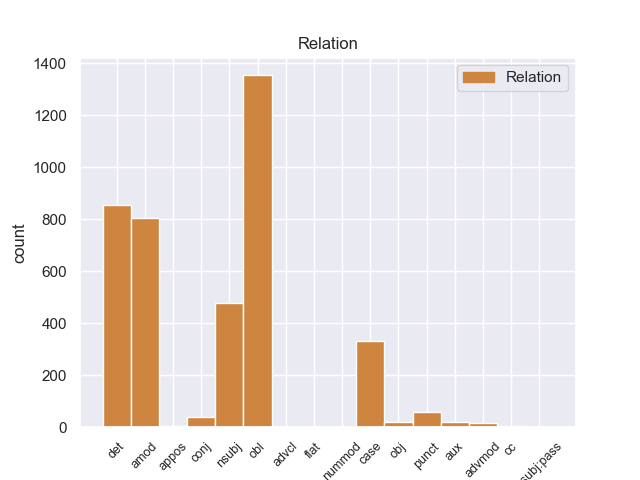
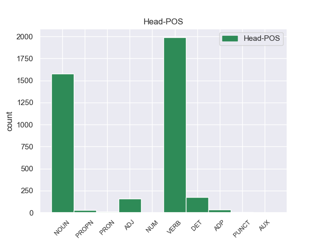
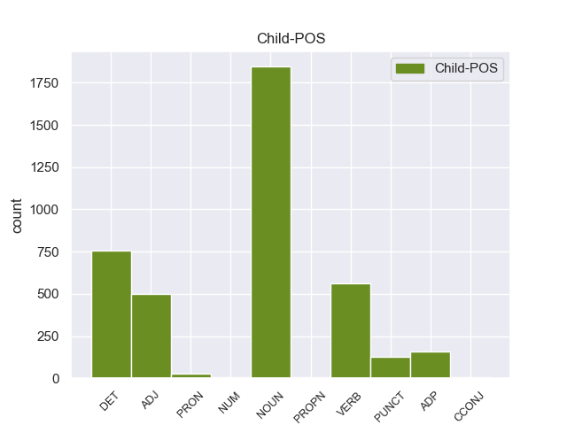

Distribution of features within this leaf



Agreement Rules sorted by frequency.
- When the dependent token is the oblique nominal(obl) of the head token, and the dependent token is NOUN.
1 Το _ _ _ _ 0 _ _ _
2 άρθρο _ _ _ _ 0 _ _ _
3 9 _ _ _ _ 0 _ _ _
4 του _ _ _ _ 0 _ _ _
5 Πρωτοκόλλου _ _ _ _ 0 _ _ _
6 , _ _ _ _ 0 _ _ _
7 όπως _ _ _ _ 0 _ _ _
8 επεσήμανε _ _ _ _ 0 _ _ _
9 με _ _ _ _ 0 _ _ _
10 αυστηρότητα _ _ _ _ 0 _ _ _
11 η _ _ _ _ 0 _ _ _
12 Πρόεδρος _ _ _ _ 0 _ _ _
13 Fontaine _ _ _ _ 0 _ _ _
14 σ _ _ _ _ 0 _ _ _
15 τον _ _ _ _ 0 _ _ _
16 Εισαγγελέα _ _ _ _ 0 _ _ _
17 , _ _ _ _ 0 _ _ _
18 μας _ _ _ _ 0 _ _ _
19 απαλλάσσει _ _ _ _ 0 _ _ _
20 τελείως _ _ _ _ 0 _ _ _
21 από _ _ _ _ 0 _ _ _
22 οποιαδήποτε _ _ _ _ 0 _ _ _
23 νομική _ _ _ _ 0 _ _ _
24 διαδικασία _ _ _ _ 0 _ _ _
25 σε _ _ _ _ 0 _ _ _
26 σχέση _ _ _ _ 0 _ _ _
27 με _ _ _ _ 0 _ _ _
28 την _ _ _ _ 0 _ _ _
29 έκφραση έκφραση NOUN _ Case=Acc|Gender=Fem|Number=Sing 35 obl _ _
30 γνώμης _ _ _ _ 0 _ _ _
31 ή _ _ _ _ 0 _ _ _
32 ψήφου _ _ _ _ 0 _ _ _
33 κατά _ _ _ _ 0 _ _ _
34 την _ _ _ _ 0 _ _ _
35 άσκηση άσκησ NOUN _ Case=Acc|Gender=Fem|Number=Sing 0 _ _ _
36 των _ _ _ _ 0 _ _ _
37 καθηκόντων _ _ _ _ 0 _ _ _
38 μας _ _ _ _ 0 _ _ _
39 ως _ _ _ _ 0 _ _ _
40 μέλη _ _ _ _ 0 _ _ _
41 αυτού _ _ _ _ 0 _ _ _
42 του _ _ _ _ 0 _ _ _
43 Κοινοβουλίου _ _ _ _ 0 _ _ _
44 . _ _ _ _ 0 _ _ _
1 πρόκειται _ _ _ _ 0 _ _ _
2 για _ _ _ _ 0 _ _ _
3 αυτό _ _ _ _ 0 _ _ _
4 το _ _ _ _ 0 _ _ _
5 οποίο _ _ _ _ 0 _ _ _
6 αποκαλύφθηκε _ _ _ _ 0 _ _ _
7 κατά _ _ _ _ 0 _ _ _
8 τη _ _ _ _ 0 _ _ _
9 διάρκεια _ _ _ _ 0 _ _ _
10 αυτής ο DET _ Case=Acc|Gender=Fem|Number=Sing 12 det _ _
11 της _ _ _ _ 0 _ _ _
12 διαδικασίας διαδικασίας ADJ _ Case=Acc|Gender=Fem|Number=Sing 0 _ _ _
13 , _ _ _ _ 0 _ _ _
14 ότι _ _ _ _ 0 _ _ _
15 ο _ _ _ _ 0 _ _ _
16 Εισαγγελέας _ _ _ _ 0 _ _ _
17 κάποια _ _ _ _ 0 _ _ _
18 στιγμή _ _ _ _ 0 _ _ _
19 ζήτησε _ _ _ _ 0 _ _ _
20 από _ _ _ _ 0 _ _ _
21 την _ _ _ _ 0 _ _ _
22 Πρόεδρο _ _ _ _ 0 _ _ _
23 του _ _ _ _ 0 _ _ _
24 Σώματος _ _ _ _ 0 _ _ _
25 , _ _ _ _ 0 _ _ _
26 την _ _ _ _ 0 _ _ _
27 προκάτοχό _ _ _ _ 0 _ _ _
28 σας _ _ _ _ 0 _ _ _
29 , _ _ _ _ 0 _ _ _
30 λεπτομέρειες _ _ _ _ 0 _ _ _
31 για _ _ _ _ 0 _ _ _
32 την _ _ _ _ 0 _ _ _
33 ψήφο _ _ _ _ 0 _ _ _
34 που _ _ _ _ 0 _ _ _
35 έχουν _ _ _ _ 0 _ _ _
36 δώσει _ _ _ _ 0 _ _ _
37 οι _ _ _ _ 0 _ _ _
38 δύο _ _ _ _ 0 _ _ _
39 συγκεκριμένοι _ _ _ _ 0 _ _ _
40 βουλευτές _ _ _ _ 0 _ _ _
41 προκειμένου _ _ _ _ 0 _ _ _
42 να _ _ _ _ 0 _ _ _
43 διευκρινιστεί _ _ _ _ 0 _ _ _
44 περαιτέρω _ _ _ _ 0 _ _ _
45 η _ _ _ _ 0 _ _ _
46 πιθανότητα _ _ _ _ 0 _ _ _
47 να _ _ _ _ 0 _ _ _
48 είχαν _ _ _ _ 0 _ _ _
49 ασκήσει _ _ _ _ 0 _ _ _
50 αθέμιτη _ _ _ _ 0 _ _ _
51 επιρροή _ _ _ _ 0 _ _ _
52 . _ _ _ _ 0 _ _ _
1 Θα _ _ _ _ 0 _ _ _
2 ήθελα _ _ _ _ 0 _ _ _
3 να _ _ _ _ 0 _ _ _
4 επιστήσω _ _ _ _ 0 _ _ _
5 την _ _ _ _ 0 _ _ _
6 προσοχή _ _ _ _ 0 _ _ _
7 όλων _ _ _ _ 0 _ _ _
8 των _ _ _ _ 0 _ _ _
9 συναδέλφων _ _ _ _ 0 _ _ _
10 σ _ _ _ _ 0 _ _ _
11 το _ _ _ _ 0 _ _ _
12 γεγονός _ _ _ _ 0 _ _ _
13 ότι _ _ _ _ 0 _ _ _
14 , _ _ _ _ 0 _ _ _
15 εάν _ _ _ _ 0 _ _ _
16 υπάρχουν _ _ _ _ 0 _ _ _
17 κάποιες _ _ _ _ 0 _ _ _
18 ελευθερίες _ _ _ _ 0 _ _ _
19 οι _ _ _ _ 0 _ _ _
20 οποίες _ _ _ _ 0 _ _ _
21 είναι _ _ _ _ 0 _ _ _
22 ζωτικής _ _ _ _ 0 _ _ _
23 σημασίας _ _ _ _ 0 _ _ _
24 για _ _ _ _ 0 _ _ _
25 την _ _ _ _ 0 _ _ _
26 άσκηση _ _ _ _ 0 _ _ _
27 του _ _ _ _ 0 _ _ _
28 λειτουργήματος _ _ _ _ 0 _ _ _
29 της _ _ _ _ 0 _ _ _
30 δημόσιας _ _ _ _ 0 _ _ _
31 εκπροσώπησης _ _ _ _ 0 _ _ _
32 , _ _ _ _ 0 _ _ _
33 ιδίως _ _ _ _ 0 _ _ _
34 για _ _ _ _ 0 _ _ _
35 ένα _ _ _ _ 0 _ _ _
36 Κοινοβούλιο _ _ _ _ 0 _ _ _
37 σαν _ _ _ _ 0 _ _ _
38 το _ _ _ _ 0 _ _ _
39 δικό _ _ _ _ 0 _ _ _
40 μας _ _ _ _ 0 _ _ _
41 , _ _ _ _ 0 _ _ _
42 η _ _ _ _ 0 _ _ _
43 ελευθερία ελευθερία NOUN _ Case=Acc|Gender=Fem|Number=Sing 45 amod _ _
44 της _ _ _ _ 0 _ _ _
45 επικοινωνίας επικοινωνία NOUN _ Case=Acc|Gender=Fem|Number=Sing 0 _ _ _
46 με _ _ _ _ 0 _ _ _
47 άλλους _ _ _ _ 0 _ _ _
48 πολίτες _ _ _ _ 0 _ _ _
49 και _ _ _ _ 0 _ _ _
50 με _ _ _ _ 0 _ _ _
51 τους _ _ _ _ 0 _ _ _
52 πολίτες _ _ _ _ 0 _ _ _
53 τρίτων _ _ _ _ 0 _ _ _
54 χωρών _ _ _ _ 0 _ _ _
55 , _ _ _ _ 0 _ _ _
56 καθώς _ _ _ _ 0 _ _ _
57 και _ _ _ _ 0 _ _ _
58 η _ _ _ _ 0 _ _ _
59 ελευθερία _ _ _ _ 0 _ _ _
60 μετακίνησης _ _ _ _ 0 _ _ _
61 , _ _ _ _ 0 _ _ _
62 είναι _ _ _ _ 0 _ _ _
63 κρίσιμες _ _ _ _ 0 _ _ _
64 για _ _ _ _ 0 _ _ _
65 τη _ _ _ _ 0 _ _ _
66 διεκπεραίωση _ _ _ _ 0 _ _ _
67 του _ _ _ _ 0 _ _ _
68 έργου _ _ _ _ 0 _ _ _
69 μας _ _ _ _ 0 _ _ _
70 . _ _ _ _ 0 _ _ _
1 Με _ _ _ _ 0 _ _ _
2 αυτές _ _ _ _ 0 _ _ _
3 τις _ _ _ _ 0 _ _ _
4 κατηγορίες _ _ _ _ 0 _ _ _
5 , _ _ _ _ 0 _ _ _
6 από _ _ _ _ 0 _ _ _
7 τις _ _ _ _ 0 _ _ _
8 οποίες _ _ _ _ 0 _ _ _
9 η _ _ _ _ 0 _ _ _
10 πρώτη _ _ _ _ 0 _ _ _
11 αφορά _ _ _ _ 0 _ _ _
12 λαθρεμπόριο _ _ _ _ 0 _ _ _
13 όπλων _ _ _ _ 0 _ _ _
14 κλπ. _ _ _ _ 0 _ _ _
15 , _ _ _ _ 0 _ _ _
16 και _ _ _ _ 0 _ _ _
17 βαρύνει _ _ _ _ 0 _ _ _
18 τόσο _ _ _ _ 0 _ _ _
19 τον _ _ _ _ 0 _ _ _
20 κ. _ _ _ _ 0 _ _ _
21 Pasqua _ _ _ _ 0 _ _ _
22 όσο _ _ _ _ 0 _ _ _
23 και _ _ _ _ 0 _ _ _
24 τον _ _ _ _ 0 _ _ _
25 κ. ός NOUN _ Case=Acc|Gender=Fem|Number=Sing 66 nsubj _ _
26 Marchiani _ _ _ _ 0 _ _ _
27 , _ _ _ _ 0 _ _ _
28 ενώ _ _ _ _ 0 _ _ _
29 η _ _ _ _ 0 _ _ _
30 δεύτερη _ _ _ _ 0 _ _ _
31 στρέφεται _ _ _ _ 0 _ _ _
32 μόνον _ _ _ _ 0 _ _ _
33 εναντίον _ _ _ _ 0 _ _ _
34 του _ _ _ _ 0 _ _ _
35 κ. _ _ _ _ 0 _ _ _
36 Pasqua _ _ _ _ 0 _ _ _
37 , _ _ _ _ 0 _ _ _
38 οι _ _ _ _ 0 _ _ _
39 ανακριτές _ _ _ _ 0 _ _ _
40 δικαστές _ _ _ _ 0 _ _ _
41 ζητούν _ _ _ _ 0 _ _ _
42 την _ _ _ _ 0 _ _ _
43 άρση _ _ _ _ 0 _ _ _
44 της _ _ _ _ 0 _ _ _
45 βουλευτικής _ _ _ _ 0 _ _ _
46 ασυλίας _ _ _ _ 0 _ _ _
47 των _ _ _ _ 0 _ _ _
48 εν _ _ _ _ 0 _ _ _
49 λόγω _ _ _ _ 0 _ _ _
50 δύο _ _ _ _ 0 _ _ _
51 κυρίων _ _ _ _ 0 _ _ _
52 , _ _ _ _ 0 _ _ _
53 προκειμένου _ _ _ _ 0 _ _ _
54 να _ _ _ _ 0 _ _ _
55 τους _ _ _ _ 0 _ _ _
56 επιβληθούν _ _ _ _ 0 _ _ _
57 ορισμένα _ _ _ _ 0 _ _ _
58 μέτρα _ _ _ _ 0 _ _ _
59 δικαστικής _ _ _ _ 0 _ _ _
60 επιτήρησης _ _ _ _ 0 _ _ _
61 : _ _ _ _ 0 _ _ _
62 να _ _ _ _ 0 _ _ _
63 τους _ _ _ _ 0 _ _ _
64 απαγορευθεί _ _ _ _ 0 _ _ _
65 η _ _ _ _ 0 _ _ _
66 επαφή επαφ NOUN _ Case=Acc|Gender=Fem|Number=Sing 0 _ _ _
67 με _ _ _ _ 0 _ _ _
68 διάφορους _ _ _ _ 0 _ _ _
69 μάρτυρες _ _ _ _ 0 _ _ _
70 ή _ _ _ _ 0 _ _ _
71 συγκατηγορουμένους _ _ _ _ 0 _ _ _
72 σ _ _ _ _ 0 _ _ _
73 τις _ _ _ _ 0 _ _ _
74 υποθέσεις _ _ _ _ 0 _ _ _
75 αυτές _ _ _ _ 0 _ _ _
76 και _ _ _ _ 0 _ _ _
77 η _ _ _ _ 0 _ _ _
78 μετάβαση _ _ _ _ 0 _ _ _
79 σε _ _ _ _ 0 _ _ _
80 διάφορες _ _ _ _ 0 _ _ _
81 χώρες _ _ _ _ 0 _ _ _
82 , _ _ _ _ 0 _ _ _
83 καθώς _ _ _ _ 0 _ _ _
84 και _ _ _ _ 0 _ _ _
85 να _ _ _ _ 0 _ _ _
86 τους _ _ _ _ 0 _ _ _
87 επιβληθεί _ _ _ _ 0 _ _ _
88 ενδεχομένως _ _ _ _ 0 _ _ _
89 η _ _ _ _ 0 _ _ _
90 καταβολή _ _ _ _ 0 _ _ _
91 εγγύησης _ _ _ _ 0 _ _ _
92 . _ _ _ _ 0 _ _ _
1 Το _ _ _ _ 0 _ _ _
2 άρθρο _ _ _ _ 0 _ _ _
3 9 _ _ _ _ 0 _ _ _
4 του _ _ _ _ 0 _ _ _
5 Πρωτοκόλλου _ _ _ _ 0 _ _ _
6 , _ _ _ _ 0 _ _ _
7 όπως _ _ _ _ 0 _ _ _
8 επεσήμανε _ _ _ _ 0 _ _ _
9 με _ _ _ _ 0 _ _ _
10 αυστηρότητα _ _ _ _ 0 _ _ _
11 η _ _ _ _ 0 _ _ _
12 Πρόεδρος _ _ _ _ 0 _ _ _
13 Fontaine _ _ _ _ 0 _ _ _
14 σ _ _ _ _ 0 _ _ _
15 τον _ _ _ _ 0 _ _ _
16 Εισαγγελέα _ _ _ _ 0 _ _ _
17 , _ _ _ _ 0 _ _ _
18 μας _ _ _ _ 0 _ _ _
19 απαλλάσσει _ _ _ _ 0 _ _ _
20 τελείως _ _ _ _ 0 _ _ _
21 από _ _ _ _ 0 _ _ _
22 οποιαδήποτε _ _ _ _ 0 _ _ _
23 νομική _ _ _ _ 0 _ _ _
24 διαδικασία διαδικασία DET _ Case=Acc|Gender=Fem|Number=Sing 0 _ _ _
25 σε _ _ _ _ 0 _ _ _
26 σχέση _ _ _ _ 0 _ _ _
27 με _ _ _ _ 0 _ _ _
28 την _ _ _ _ 0 _ _ _
29 έκφραση _ _ _ _ 0 _ _ _
30 γνώμης _ _ _ _ 0 _ _ _
31 ή _ _ _ _ 0 _ _ _
32 ψήφου _ _ _ _ 0 _ _ _
33 κατά _ _ _ _ 0 _ _ _
34 την _ _ _ _ 0 _ _ _
35 άσκηση _ _ _ _ 0 _ _ _
36 των _ _ _ _ 0 _ _ _
37 καθηκόντων καθηκόντων ADJ _ Case=Acc|Gender=Fem|Number=Sing 24 amod _ _
38 μας _ _ _ _ 0 _ _ _
39 ως _ _ _ _ 0 _ _ _
40 μέλη _ _ _ _ 0 _ _ _
41 αυτού _ _ _ _ 0 _ _ _
42 του _ _ _ _ 0 _ _ _
43 Κοινοβουλίου _ _ _ _ 0 _ _ _
44 . _ _ _ _ 0 _ _ _
1 Με _ _ _ _ 0 _ _ _
2 αυτές _ _ _ _ 0 _ _ _
3 τις _ _ _ _ 0 _ _ _
4 κατηγορίες _ _ _ _ 0 _ _ _
5 , _ _ _ _ 0 _ _ _
6 από _ _ _ _ 0 _ _ _
7 τις _ _ _ _ 0 _ _ _
8 οποίες _ _ _ _ 0 _ _ _
9 η _ _ _ _ 0 _ _ _
10 πρώτη _ _ _ _ 0 _ _ _
11 αφορά _ _ _ _ 0 _ _ _
12 λαθρεμπόριο _ _ _ _ 0 _ _ _
13 όπλων _ _ _ _ 0 _ _ _
14 κλπ. _ _ _ _ 0 _ _ _
15 , _ _ _ _ 0 _ _ _
16 και _ _ _ _ 0 _ _ _
17 βαρύνει _ _ _ _ 0 _ _ _
18 τόσο _ _ _ _ 0 _ _ _
19 τον _ _ _ _ 0 _ _ _
20 κ. _ _ _ _ 0 _ _ _
21 Pasqua _ _ _ _ 0 _ _ _
22 όσο _ _ _ _ 0 _ _ _
23 και _ _ _ _ 0 _ _ _
24 τον _ _ _ _ 0 _ _ _
25 κ. _ _ _ _ 0 _ _ _
26 Marchiani _ _ _ _ 0 _ _ _
27 , _ _ _ _ 0 _ _ _
28 ενώ _ _ _ _ 0 _ _ _
29 η _ _ _ _ 0 _ _ _
30 δεύτερη _ _ _ _ 0 _ _ _
31 στρέφεται _ _ _ _ 0 _ _ _
32 μόνον _ _ _ _ 0 _ _ _
33 εναντίον _ _ _ _ 0 _ _ _
34 του _ _ _ _ 0 _ _ _
35 κ. _ _ _ _ 0 _ _ _
36 Pasqua _ _ _ _ 0 _ _ _
37 , _ _ _ _ 0 _ _ _
38 οι _ _ _ _ 0 _ _ _
39 ανακριτές ανακριτές VERB _ Case=Acc|Gender=Fem|Number=Sing 56 obl _ _
40 δικαστές _ _ _ _ 0 _ _ _
41 ζητούν _ _ _ _ 0 _ _ _
42 την _ _ _ _ 0 _ _ _
43 άρση _ _ _ _ 0 _ _ _
44 της _ _ _ _ 0 _ _ _
45 βουλευτικής _ _ _ _ 0 _ _ _
46 ασυλίας _ _ _ _ 0 _ _ _
47 των _ _ _ _ 0 _ _ _
48 εν _ _ _ _ 0 _ _ _
49 λόγω _ _ _ _ 0 _ _ _
50 δύο _ _ _ _ 0 _ _ _
51 κυρίων _ _ _ _ 0 _ _ _
52 , _ _ _ _ 0 _ _ _
53 προκειμένου _ _ _ _ 0 _ _ _
54 να _ _ _ _ 0 _ _ _
55 τους _ _ _ _ 0 _ _ _
56 επιβληθούν επιβληθού VERB _ Case=Acc|Gender=Fem|Number=Sing 0 _ _ _
57 ορισμένα _ _ _ _ 0 _ _ _
58 μέτρα _ _ _ _ 0 _ _ _
59 δικαστικής _ _ _ _ 0 _ _ _
60 επιτήρησης _ _ _ _ 0 _ _ _
61 : _ _ _ _ 0 _ _ _
62 να _ _ _ _ 0 _ _ _
63 τους _ _ _ _ 0 _ _ _
64 απαγορευθεί _ _ _ _ 0 _ _ _
65 η _ _ _ _ 0 _ _ _
66 επαφή _ _ _ _ 0 _ _ _
67 με _ _ _ _ 0 _ _ _
68 διάφορους _ _ _ _ 0 _ _ _
69 μάρτυρες _ _ _ _ 0 _ _ _
70 ή _ _ _ _ 0 _ _ _
71 συγκατηγορουμένους _ _ _ _ 0 _ _ _
72 σ _ _ _ _ 0 _ _ _
73 τις _ _ _ _ 0 _ _ _
74 υποθέσεις _ _ _ _ 0 _ _ _
75 αυτές _ _ _ _ 0 _ _ _
76 και _ _ _ _ 0 _ _ _
77 η _ _ _ _ 0 _ _ _
78 μετάβαση _ _ _ _ 0 _ _ _
79 σε _ _ _ _ 0 _ _ _
80 διάφορες _ _ _ _ 0 _ _ _
81 χώρες _ _ _ _ 0 _ _ _
82 , _ _ _ _ 0 _ _ _
83 καθώς _ _ _ _ 0 _ _ _
84 και _ _ _ _ 0 _ _ _
85 να _ _ _ _ 0 _ _ _
86 τους _ _ _ _ 0 _ _ _
87 επιβληθεί _ _ _ _ 0 _ _ _
88 ενδεχομένως _ _ _ _ 0 _ _ _
89 η _ _ _ _ 0 _ _ _
90 καταβολή _ _ _ _ 0 _ _ _
91 εγγύησης _ _ _ _ 0 _ _ _
92 . _ _ _ _ 0 _ _ _
1 Με _ _ _ _ 0 _ _ _
2 αυτές _ _ _ _ 0 _ _ _
3 τις _ _ _ _ 0 _ _ _
4 κατηγορίες _ _ _ _ 0 _ _ _
5 , _ _ _ _ 0 _ _ _
6 από _ _ _ _ 0 _ _ _
7 τις _ _ _ _ 0 _ _ _
8 οποίες _ _ _ _ 0 _ _ _
9 η _ _ _ _ 0 _ _ _
10 πρώτη _ _ _ _ 0 _ _ _
11 αφορά _ _ _ _ 0 _ _ _
12 λαθρεμπόριο λαθρεμπόριο NOUN _ Case=Acc|Gender=Fem|Number=Sing 56 det _ _
13 όπλων _ _ _ _ 0 _ _ _
14 κλπ. _ _ _ _ 0 _ _ _
15 , _ _ _ _ 0 _ _ _
16 και _ _ _ _ 0 _ _ _
17 βαρύνει _ _ _ _ 0 _ _ _
18 τόσο _ _ _ _ 0 _ _ _
19 τον _ _ _ _ 0 _ _ _
20 κ. _ _ _ _ 0 _ _ _
21 Pasqua _ _ _ _ 0 _ _ _
22 όσο _ _ _ _ 0 _ _ _
23 και _ _ _ _ 0 _ _ _
24 τον _ _ _ _ 0 _ _ _
25 κ. _ _ _ _ 0 _ _ _
26 Marchiani _ _ _ _ 0 _ _ _
27 , _ _ _ _ 0 _ _ _
28 ενώ _ _ _ _ 0 _ _ _
29 η _ _ _ _ 0 _ _ _
30 δεύτερη _ _ _ _ 0 _ _ _
31 στρέφεται _ _ _ _ 0 _ _ _
32 μόνον _ _ _ _ 0 _ _ _
33 εναντίον _ _ _ _ 0 _ _ _
34 του _ _ _ _ 0 _ _ _
35 κ. _ _ _ _ 0 _ _ _
36 Pasqua _ _ _ _ 0 _ _ _
37 , _ _ _ _ 0 _ _ _
38 οι _ _ _ _ 0 _ _ _
39 ανακριτές _ _ _ _ 0 _ _ _
40 δικαστές _ _ _ _ 0 _ _ _
41 ζητούν _ _ _ _ 0 _ _ _
42 την _ _ _ _ 0 _ _ _
43 άρση _ _ _ _ 0 _ _ _
44 της _ _ _ _ 0 _ _ _
45 βουλευτικής _ _ _ _ 0 _ _ _
46 ασυλίας _ _ _ _ 0 _ _ _
47 των _ _ _ _ 0 _ _ _
48 εν _ _ _ _ 0 _ _ _
49 λόγω _ _ _ _ 0 _ _ _
50 δύο _ _ _ _ 0 _ _ _
51 κυρίων _ _ _ _ 0 _ _ _
52 , _ _ _ _ 0 _ _ _
53 προκειμένου _ _ _ _ 0 _ _ _
54 να _ _ _ _ 0 _ _ _
55 τους _ _ _ _ 0 _ _ _
56 επιβληθούν επιβληθού VERB _ Case=Acc|Gender=Fem|Number=Sing 0 _ _ _
57 ορισμένα _ _ _ _ 0 _ _ _
58 μέτρα _ _ _ _ 0 _ _ _
59 δικαστικής _ _ _ _ 0 _ _ _
60 επιτήρησης _ _ _ _ 0 _ _ _
61 : _ _ _ _ 0 _ _ _
62 να _ _ _ _ 0 _ _ _
63 τους _ _ _ _ 0 _ _ _
64 απαγορευθεί _ _ _ _ 0 _ _ _
65 η _ _ _ _ 0 _ _ _
66 επαφή _ _ _ _ 0 _ _ _
67 με _ _ _ _ 0 _ _ _
68 διάφορους _ _ _ _ 0 _ _ _
69 μάρτυρες _ _ _ _ 0 _ _ _
70 ή _ _ _ _ 0 _ _ _
71 συγκατηγορουμένους _ _ _ _ 0 _ _ _
72 σ _ _ _ _ 0 _ _ _
73 τις _ _ _ _ 0 _ _ _
74 υποθέσεις _ _ _ _ 0 _ _ _
75 αυτές _ _ _ _ 0 _ _ _
76 και _ _ _ _ 0 _ _ _
77 η _ _ _ _ 0 _ _ _
78 μετάβαση _ _ _ _ 0 _ _ _
79 σε _ _ _ _ 0 _ _ _
80 διάφορες _ _ _ _ 0 _ _ _
81 χώρες _ _ _ _ 0 _ _ _
82 , _ _ _ _ 0 _ _ _
83 καθώς _ _ _ _ 0 _ _ _
84 και _ _ _ _ 0 _ _ _
85 να _ _ _ _ 0 _ _ _
86 τους _ _ _ _ 0 _ _ _
87 επιβληθεί _ _ _ _ 0 _ _ _
88 ενδεχομένως _ _ _ _ 0 _ _ _
89 η _ _ _ _ 0 _ _ _
90 καταβολή _ _ _ _ 0 _ _ _
91 εγγύησης _ _ _ _ 0 _ _ _
92 . _ _ _ _ 0 _ _ _
1 από _ _ _ _ 0 _ _ _
2 τα _ _ _ _ 0 _ _ _
3 δε _ _ _ _ 0 _ _ _
4 έγγραφα έγγραφα ADJ _ Case=Acc|Gender=Fem|Number=Sing 38 obl _ _
5 της _ _ _ _ 0 _ _ _
6 υπόθεσης _ _ _ _ 0 _ _ _
7 προκύπτει _ _ _ _ 0 _ _ _
8 ότι _ _ _ _ 0 _ _ _
9 δεν _ _ _ _ 0 _ _ _
10 φαίνεται _ _ _ _ 0 _ _ _
11 να _ _ _ _ 0 _ _ _
12 έχει _ _ _ _ 0 _ _ _
13 ληφθεί _ _ _ _ 0 _ _ _
14 υπόψη _ _ _ _ 0 _ _ _
15 η _ _ _ _ 0 _ _ _
16 σύσταση _ _ _ _ 0 _ _ _
17 να _ _ _ _ 0 _ _ _
18 διαβιβαστεί _ _ _ _ 0 _ _ _
19 η _ _ _ _ 0 _ _ _
20 αίτηση _ _ _ _ 0 _ _ _
21 άρσης _ _ _ _ 0 _ _ _
22 της _ _ _ _ 0 _ _ _
23 ασυλίας _ _ _ _ 0 _ _ _
24 μόνον _ _ _ _ 0 _ _ _
25 επί _ _ _ _ 0 _ _ _
26 τη _ _ _ _ 0 _ _ _
27 βάσει _ _ _ _ 0 _ _ _
28 ακριβέστερου _ _ _ _ 0 _ _ _
29 προσδιορισμού _ _ _ _ 0 _ _ _
30 όσον _ _ _ _ 0 _ _ _
31 αφορά _ _ _ _ 0 _ _ _
32 τους _ _ _ _ 0 _ _ _
33 τόπους _ _ _ _ 0 _ _ _
34 και _ _ _ _ 0 _ _ _
35 τα _ _ _ _ 0 _ _ _
36 πρόσωπα _ _ _ _ 0 _ _ _
37 που _ _ _ _ 0 _ _ _
38 εμπλέκονται εμπλέκονται VERB _ Case=Acc|Gender=Fem|Number=Sing 0 _ _ _
39 σ _ _ _ _ 0 _ _ _
40 την _ _ _ _ 0 _ _ _
41 υπόθεση _ _ _ _ 0 _ _ _
42 . _ _ _ _ 0 _ _ _
1 Με _ _ _ _ 0 _ _ _
2 αυτές _ _ _ _ 0 _ _ _
3 τις _ _ _ _ 0 _ _ _
4 κατηγορίες _ _ _ _ 0 _ _ _
5 , _ _ _ _ 0 _ _ _
6 από _ _ _ _ 0 _ _ _
7 τις _ _ _ _ 0 _ _ _
8 οποίες _ _ _ _ 0 _ _ _
9 η _ _ _ _ 0 _ _ _
10 πρώτη _ _ _ _ 0 _ _ _
11 αφορά _ _ _ _ 0 _ _ _
12 λαθρεμπόριο _ _ _ _ 0 _ _ _
13 όπλων _ _ _ _ 0 _ _ _
14 κλπ. _ _ _ _ 0 _ _ _
15 , _ _ _ _ 0 _ _ _
16 και _ _ _ _ 0 _ _ _
17 βαρύνει _ _ _ _ 0 _ _ _
18 τόσο _ _ _ _ 0 _ _ _
19 τον _ _ _ _ 0 _ _ _
20 κ. _ _ _ _ 0 _ _ _
21 Pasqua _ _ _ _ 0 _ _ _
22 όσο _ _ _ _ 0 _ _ _
23 και _ _ _ _ 0 _ _ _
24 τον _ _ _ _ 0 _ _ _
25 κ. _ _ _ _ 0 _ _ _
26 Marchiani _ _ _ _ 0 _ _ _
27 , _ _ _ _ 0 _ _ _
28 ενώ _ _ _ _ 0 _ _ _
29 η _ _ _ _ 0 _ _ _
30 δεύτερη _ _ _ _ 0 _ _ _
31 στρέφεται _ _ _ _ 0 _ _ _
32 μόνον _ _ _ _ 0 _ _ _
33 εναντίον _ _ _ _ 0 _ _ _
34 του _ _ _ _ 0 _ _ _
35 κ. _ _ _ _ 0 _ _ _
36 Pasqua _ _ _ _ 0 _ _ _
37 , _ _ _ _ 0 _ _ _
38 οι _ _ _ _ 0 _ _ _
39 ανακριτές _ _ _ _ 0 _ _ _
40 δικαστές _ _ _ _ 0 _ _ _
41 ζητούν _ _ _ _ 0 _ _ _
42 την _ _ _ _ 0 _ _ _
43 άρση _ _ _ _ 0 _ _ _
44 της _ _ _ _ 0 _ _ _
45 βουλευτικής _ _ _ _ 0 _ _ _
46 ασυλίας _ _ _ _ 0 _ _ _
47 των _ _ _ _ 0 _ _ _
48 εν _ _ _ _ 0 _ _ _
49 λόγω _ _ _ _ 0 _ _ _
50 δύο _ _ _ _ 0 _ _ _
51 κυρίων _ _ _ _ 0 _ _ _
52 , _ _ _ _ 0 _ _ _
53 προκειμένου _ _ _ _ 0 _ _ _
54 να _ _ _ _ 0 _ _ _
55 τους _ _ _ _ 0 _ _ _
56 επιβληθούν _ _ _ _ 0 _ _ _
57 ορισμένα _ _ _ _ 0 _ _ _
58 μέτρα _ _ _ _ 0 _ _ _
59 δικαστικής _ _ _ _ 0 _ _ _
60 επιτήρησης _ _ _ _ 0 _ _ _
61 : _ _ _ _ 0 _ _ _
62 να _ _ _ _ 0 _ _ _
63 τους _ _ _ _ 0 _ _ _
64 απαγορευθεί απαγορευθεί VERB _ Case=Acc|Gender=Fem|Number=Sing 66 amod _ _
65 η _ _ _ _ 0 _ _ _
66 επαφή επαφ NOUN _ Case=Acc|Gender=Fem|Number=Sing 0 _ _ _
67 με _ _ _ _ 0 _ _ _
68 διάφορους _ _ _ _ 0 _ _ _
69 μάρτυρες _ _ _ _ 0 _ _ _
70 ή _ _ _ _ 0 _ _ _
71 συγκατηγορουμένους _ _ _ _ 0 _ _ _
72 σ _ _ _ _ 0 _ _ _
73 τις _ _ _ _ 0 _ _ _
74 υποθέσεις _ _ _ _ 0 _ _ _
75 αυτές _ _ _ _ 0 _ _ _
76 και _ _ _ _ 0 _ _ _
77 η _ _ _ _ 0 _ _ _
78 μετάβαση _ _ _ _ 0 _ _ _
79 σε _ _ _ _ 0 _ _ _
80 διάφορες _ _ _ _ 0 _ _ _
81 χώρες _ _ _ _ 0 _ _ _
82 , _ _ _ _ 0 _ _ _
83 καθώς _ _ _ _ 0 _ _ _
84 και _ _ _ _ 0 _ _ _
85 να _ _ _ _ 0 _ _ _
86 τους _ _ _ _ 0 _ _ _
87 επιβληθεί _ _ _ _ 0 _ _ _
88 ενδεχομένως _ _ _ _ 0 _ _ _
89 η _ _ _ _ 0 _ _ _
90 καταβολή _ _ _ _ 0 _ _ _
91 εγγύησης _ _ _ _ 0 _ _ _
92 . _ _ _ _ 0 _ _ _
1 Υπάρχει _ _ _ _ 0 _ _ _
2 μια _ _ _ _ 0 _ _ _
3 κατηγορία _ _ _ _ 0 _ _ _
4 εναντίον _ _ _ _ 0 _ _ _
5 του _ _ _ _ 0 _ _ _
6 κ. _ _ _ _ 0 _ _ _
7 Pasqua _ _ _ _ 0 _ _ _
8 , _ _ _ _ 0 _ _ _
9 αλλά _ _ _ _ 0 _ _ _
10 όχι _ _ _ _ 0 _ _ _
11 εναντίον _ _ _ _ 0 _ _ _
12 του _ _ _ _ 0 _ _ _
13 κ. _ _ _ _ 0 _ _ _
14 Marchiani _ _ _ _ 0 _ _ _
15 , _ _ _ _ 0 _ _ _
16 για _ _ _ _ 0 _ _ _
17 παράνομη _ _ _ _ 0 _ _ _
18 χρηματοδότηση _ _ _ _ 0 _ _ _
19 προεκλογικής _ _ _ _ 0 _ _ _
20 εκστρατείας _ _ _ _ 0 _ _ _
21 μέσω _ _ _ _ 0 _ _ _
22 αποδοχής _ _ _ _ 0 _ _ _
23 δωρεών _ _ _ _ 0 _ _ _
24 και _ _ _ _ 0 _ _ _
25 χρηματοδότησης _ _ _ _ 0 _ _ _
26 της _ _ _ _ 0 _ _ _
27 εκστρατείας _ _ _ _ 0 _ _ _
28 για _ _ _ _ 0 _ _ _
29 τις _ _ _ _ 0 _ _ _
30 ευρωπαϊκές _ _ _ _ 0 _ _ _
31 εκλογές _ _ _ _ 0 _ _ _
32 , _ _ _ _ 0 _ _ _
33 κατά _ _ _ _ 0 _ _ _
34 παράβαση παράβαση NOUN _ Case=Acc|Gender=Fem|Number=Sing 38 case _ _
35 των _ _ _ _ 0 _ _ _
36 διατάξεων _ _ _ _ 0 _ _ _
37 του _ _ _ _ 0 _ _ _
38 άρθρου άρθρους NOUN _ Case=Acc|Gender=Fem|Number=Sing 0 _ _ _
39 L _ _ _ _ 0 _ _ _
40 52.8 _ _ _ _ 0 _ _ _
41 του _ _ _ _ 0 _ _ _
42 Εκλογικού _ _ _ _ 0 _ _ _
43 Κώδικα _ _ _ _ 0 _ _ _
44 . _ _ _ _ 0 _ _ _
1 Η _ _ _ _ 0 _ _ _
2 Γαλλία _ _ _ _ 0 _ _ _
3 δήλωσε δήλωσε VERB _ Case=Acc|Gender=Fem|Number=Sing 0 _ _ _
4 ότι _ _ _ _ 0 _ _ _
5 « _ _ _ _ 0 _ _ _
6 ο _ _ _ _ 0 _ _ _
7 αλ _ _ _ _ 0 _ _ _
8 Σενούσι _ _ _ _ 0 _ _ _
9 έχει _ _ _ _ 0 _ _ _
10 συλληφθεί _ _ _ _ 0 _ _ _
11 μετά μετά DET _ Case=Acc|Definite=Def|Gender=Fem|Number=Sing|PronType=Art 3 case _ _
12 από _ _ _ _ 0 _ _ _
13 συνεργασία _ _ _ _ 0 _ _ _
14 Γάλλων _ _ _ _ 0 _ _ _
15 και _ _ _ _ 0 _ _ _
16 Μαυριτανών _ _ _ _ 0 _ _ _
17 πρακτόρων _ _ _ _ 0 _ _ _
18 . _ _ _ _ 0 _ _ _
1 Με _ _ _ _ 0 _ _ _
2 αυτές _ _ _ _ 0 _ _ _
3 τις _ _ _ _ 0 _ _ _
4 κατηγορίες κατηγορίες VERB _ Case=Acc|Gender=Fem|Number=Sing 56 nsubj _ _
5 , _ _ _ _ 0 _ _ _
6 από _ _ _ _ 0 _ _ _
7 τις _ _ _ _ 0 _ _ _
8 οποίες _ _ _ _ 0 _ _ _
9 η _ _ _ _ 0 _ _ _
10 πρώτη _ _ _ _ 0 _ _ _
11 αφορά _ _ _ _ 0 _ _ _
12 λαθρεμπόριο _ _ _ _ 0 _ _ _
13 όπλων _ _ _ _ 0 _ _ _
14 κλπ. _ _ _ _ 0 _ _ _
15 , _ _ _ _ 0 _ _ _
16 και _ _ _ _ 0 _ _ _
17 βαρύνει _ _ _ _ 0 _ _ _
18 τόσο _ _ _ _ 0 _ _ _
19 τον _ _ _ _ 0 _ _ _
20 κ. _ _ _ _ 0 _ _ _
21 Pasqua _ _ _ _ 0 _ _ _
22 όσο _ _ _ _ 0 _ _ _
23 και _ _ _ _ 0 _ _ _
24 τον _ _ _ _ 0 _ _ _
25 κ. _ _ _ _ 0 _ _ _
26 Marchiani _ _ _ _ 0 _ _ _
27 , _ _ _ _ 0 _ _ _
28 ενώ _ _ _ _ 0 _ _ _
29 η _ _ _ _ 0 _ _ _
30 δεύτερη _ _ _ _ 0 _ _ _
31 στρέφεται _ _ _ _ 0 _ _ _
32 μόνον _ _ _ _ 0 _ _ _
33 εναντίον _ _ _ _ 0 _ _ _
34 του _ _ _ _ 0 _ _ _
35 κ. _ _ _ _ 0 _ _ _
36 Pasqua _ _ _ _ 0 _ _ _
37 , _ _ _ _ 0 _ _ _
38 οι _ _ _ _ 0 _ _ _
39 ανακριτές _ _ _ _ 0 _ _ _
40 δικαστές _ _ _ _ 0 _ _ _
41 ζητούν _ _ _ _ 0 _ _ _
42 την _ _ _ _ 0 _ _ _
43 άρση _ _ _ _ 0 _ _ _
44 της _ _ _ _ 0 _ _ _
45 βουλευτικής _ _ _ _ 0 _ _ _
46 ασυλίας _ _ _ _ 0 _ _ _
47 των _ _ _ _ 0 _ _ _
48 εν _ _ _ _ 0 _ _ _
49 λόγω _ _ _ _ 0 _ _ _
50 δύο _ _ _ _ 0 _ _ _
51 κυρίων _ _ _ _ 0 _ _ _
52 , _ _ _ _ 0 _ _ _
53 προκειμένου _ _ _ _ 0 _ _ _
54 να _ _ _ _ 0 _ _ _
55 τους _ _ _ _ 0 _ _ _
56 επιβληθούν επιβληθού VERB _ Case=Acc|Gender=Fem|Number=Sing 0 _ _ _
57 ορισμένα _ _ _ _ 0 _ _ _
58 μέτρα _ _ _ _ 0 _ _ _
59 δικαστικής _ _ _ _ 0 _ _ _
60 επιτήρησης _ _ _ _ 0 _ _ _
61 : _ _ _ _ 0 _ _ _
62 να _ _ _ _ 0 _ _ _
63 τους _ _ _ _ 0 _ _ _
64 απαγορευθεί _ _ _ _ 0 _ _ _
65 η _ _ _ _ 0 _ _ _
66 επαφή _ _ _ _ 0 _ _ _
67 με _ _ _ _ 0 _ _ _
68 διάφορους _ _ _ _ 0 _ _ _
69 μάρτυρες _ _ _ _ 0 _ _ _
70 ή _ _ _ _ 0 _ _ _
71 συγκατηγορουμένους _ _ _ _ 0 _ _ _
72 σ _ _ _ _ 0 _ _ _
73 τις _ _ _ _ 0 _ _ _
74 υποθέσεις _ _ _ _ 0 _ _ _
75 αυτές _ _ _ _ 0 _ _ _
76 και _ _ _ _ 0 _ _ _
77 η _ _ _ _ 0 _ _ _
78 μετάβαση _ _ _ _ 0 _ _ _
79 σε _ _ _ _ 0 _ _ _
80 διάφορες _ _ _ _ 0 _ _ _
81 χώρες _ _ _ _ 0 _ _ _
82 , _ _ _ _ 0 _ _ _
83 καθώς _ _ _ _ 0 _ _ _
84 και _ _ _ _ 0 _ _ _
85 να _ _ _ _ 0 _ _ _
86 τους _ _ _ _ 0 _ _ _
87 επιβληθεί _ _ _ _ 0 _ _ _
88 ενδεχομένως _ _ _ _ 0 _ _ _
89 η _ _ _ _ 0 _ _ _
90 καταβολή _ _ _ _ 0 _ _ _
91 εγγύησης _ _ _ _ 0 _ _ _
92 . _ _ _ _ 0 _ _ _
1 Υπάρχει _ _ _ _ 0 _ _ _
2 μια _ _ _ _ 0 _ _ _
3 κατηγορία _ _ _ _ 0 _ _ _
4 εναντίον _ _ _ _ 0 _ _ _
5 του _ _ _ _ 0 _ _ _
6 κ. _ _ _ _ 0 _ _ _
7 Pasqua _ _ _ _ 0 _ _ _
8 , _ _ _ _ 0 _ _ _
9 αλλά _ _ _ _ 0 _ _ _
10 όχι _ _ _ _ 0 _ _ _
11 εναντίον _ _ _ _ 0 _ _ _
12 του _ _ _ _ 0 _ _ _
13 κ. _ _ _ _ 0 _ _ _
14 Marchiani _ _ _ _ 0 _ _ _
15 , _ _ _ _ 0 _ _ _
16 για _ _ _ _ 0 _ _ _
17 παράνομη _ _ _ _ 0 _ _ _
18 χρηματοδότηση _ _ _ _ 0 _ _ _
19 προεκλογικής _ _ _ _ 0 _ _ _
20 εκστρατείας _ _ _ _ 0 _ _ _
21 μέσω _ _ _ _ 0 _ _ _
22 αποδοχής _ _ _ _ 0 _ _ _
23 δωρεών _ _ _ _ 0 _ _ _
24 και _ _ _ _ 0 _ _ _
25 χρηματοδότησης _ _ _ _ 0 _ _ _
26 της _ _ _ _ 0 _ _ _
27 εκστρατείας _ _ _ _ 0 _ _ _
28 για _ _ _ _ 0 _ _ _
29 τις _ _ _ _ 0 _ _ _
30 ευρωπαϊκές _ _ _ _ 0 _ _ _
31 εκλογές _ _ _ _ 0 _ _ _
32 , _ _ _ _ 0 _ _ _
33 κατά _ _ _ _ 0 _ _ _
34 παράβαση _ _ _ _ 0 _ _ _
35 των _ _ _ _ 0 _ _ _
36 διατάξεων _ _ _ _ 0 _ _ _
37 του _ _ _ _ 0 _ _ _
38 άρθρου άρθρους NOUN _ Case=Acc|Gender=Fem|Number=Sing 0 _ _ _
39 L ADP _ Case=Acc|Gender=Fem|Number=Sing 38 case _ _
40 52.8 _ _ _ _ 0 _ _ _
41 του _ _ _ _ 0 _ _ _
42 Εκλογικού _ _ _ _ 0 _ _ _
43 Κώδικα _ _ _ _ 0 _ _ _
44 . _ _ _ _ 0 _ _ _
1 Ωστόσο _ _ _ _ 0 _ _ _
2 , _ _ _ _ 0 _ _ _
3 ως _ _ _ _ 0 _ _ _
4 προς _ _ _ _ 0 _ _ _
5 την _ _ _ _ 0 _ _ _
6 ουσία _ _ _ _ 0 _ _ _
7 των _ _ _ _ 0 _ _ _
8 κατηγοριών κατηγοριών ADJ _ Case=Acc|Gender=Fem|Number=Sing 13 nsubj _ _
9 , _ _ _ _ 0 _ _ _
10 δεν _ _ _ _ 0 _ _ _
11 μπορώ _ _ _ _ 0 _ _ _
12 να _ _ _ _ 0 _ _ _
13 λάβω λάβω NOUN _ Case=Acc|Gender=Fem|Number=Sing 0 _ _ _
14 θέση _ _ _ _ 0 _ _ _
15 , _ _ _ _ 0 _ _ _
16 ούτε _ _ _ _ 0 _ _ _
17 το _ _ _ _ 0 _ _ _
18 Σώμα _ _ _ _ 0 _ _ _
19 πρέπει _ _ _ _ 0 _ _ _
20 να _ _ _ _ 0 _ _ _
21 λάβει _ _ _ _ 0 _ _ _
22 θέση _ _ _ _ 0 _ _ _
23 σχετικά _ _ _ _ 0 _ _ _
24 . _ _ _ _ 0 _ _ _
1 « « PUNCT _ Case=Acc|Definite=Def|Gender=Fem|Number=Sing|PronType=Art 5 punct _ _
2 Η _ _ _ _ 0 _ _ _
3 πόλη _ _ _ _ 0 _ _ _
4 μας _ _ _ _ 0 _ _ _
5 κήρυξε κήρυξε VERB _ Case=Acc|Gender=Fem|Number=Sing 0 _ _ _
6 καθεστώς _ _ _ _ 0 _ _ _
7 ημιαυτονομίας _ _ _ _ 0 _ _ _
8 . _ _ _ _ 0 _ _ _
1 Ο _ _ _ _ 0 _ _ _
2 θάνατος θάνατοςς DET _ Case=Acc|Gender=Fem|Number=Sing 10 obl _ _
3 του _ _ _ _ 0 _ _ _
4 βασιλιά _ _ _ _ 0 _ _ _
5 Αλέξανδρου _ _ _ _ 0 _ _ _
6 είχε _ _ _ _ 0 _ _ _
7 ως _ _ _ _ 0 _ _ _
8 συνέπεια _ _ _ _ 0 _ _ _
9 να _ _ _ _ 0 _ _ _
10 ανακηρύξει ανακηρύξει VERB _ Case=Acc|Gender=Fem|Number=Sing 0 _ _ _
11 αντιβασιλέα _ _ _ _ 0 _ _ _
12 η _ _ _ _ 0 _ _ _
13 Βουλή _ _ _ _ 0 _ _ _
14 τον _ _ _ _ 0 _ _ _
15 ναύαρχο _ _ _ _ 0 _ _ _
16 Παύλο _ _ _ _ 0 _ _ _
17 Κουντουριώτη _ _ _ _ 0 _ _ _
18 . _ _ _ _ 0 _ _ _
1 Η _ _ _ _ 0 _ _ _
2 Μπενφίκα _ _ _ _ 0 _ _ _
3 ήταν _ _ _ _ 0 _ _ _
4 πιο _ _ _ _ 0 _ _ _
5 επιθετική _ _ _ _ 0 _ _ _
6 και _ _ _ _ 0 _ _ _
7 καλύτερη _ _ _ _ 0 _ _ _
8 σ _ _ _ _ 0 _ _ _
9 το _ _ _ _ 0 _ _ _
10 πρώτο _ _ _ _ 0 _ _ _
11 ημίχρονο _ _ _ _ 0 _ _ _
12 , _ _ _ _ 0 _ _ _
13 με _ _ _ _ 0 _ _ _
14 αποτέλεσμα _ _ _ _ 0 _ _ _
15 να _ _ _ _ 0 _ _ _
16 ανοίξει ανοίξει VERB _ Case=Acc|Gender=Fem|Number=Sing 22 case _ _
17 το _ _ _ _ 0 _ _ _
18 σκορ _ _ _ _ 0 _ _ _
19 σ _ _ _ _ 0 _ _ _
20 το _ _ _ _ 0 _ _ _
21 πρώτο _ _ _ _ 0 _ _ _
22 λεπτό λεπτό NOUN _ Case=Acc|Gender=Fem|Number=Sing 0 _ _ _
23 των _ _ _ _ 0 _ _ _
24 καθυστερήσεων _ _ _ _ 0 _ _ _
25 , _ _ _ _ 0 _ _ _
26 χάρη _ _ _ _ 0 _ _ _
27 σ _ _ _ _ 0 _ _ _
28 τον _ _ _ _ 0 _ _ _
29 Μάξι _ _ _ _ 0 _ _ _
30 Περέιρα _ _ _ _ 0 _ _ _
31 . _ _ _ _ 0 _ _ _
1 Η _ _ _ _ 0 _ _ _
2 Μπενφίκα _ _ _ _ 0 _ _ _
3 ήταν _ _ _ _ 0 _ _ _
4 πιο _ _ _ _ 0 _ _ _
5 επιθετική _ _ _ _ 0 _ _ _
6 και _ _ _ _ 0 _ _ _
7 καλύτερη _ _ _ _ 0 _ _ _
8 σ _ _ _ _ 0 _ _ _
9 το _ _ _ _ 0 _ _ _
10 πρώτο πρώτο ADP _ Case=Acc|Gender=Fem|Number=Sing 11 det _ _
11 ημίχρονο ημίχρονο NOUN _ Case=Acc|Gender=Fem|Number=Sing 0 _ _ _
12 , _ _ _ _ 0 _ _ _
13 με _ _ _ _ 0 _ _ _
14 αποτέλεσμα _ _ _ _ 0 _ _ _
15 να _ _ _ _ 0 _ _ _
16 ανοίξει _ _ _ _ 0 _ _ _
17 το _ _ _ _ 0 _ _ _
18 σκορ _ _ _ _ 0 _ _ _
19 σ _ _ _ _ 0 _ _ _
20 το _ _ _ _ 0 _ _ _
21 πρώτο _ _ _ _ 0 _ _ _
22 λεπτό _ _ _ _ 0 _ _ _
23 των _ _ _ _ 0 _ _ _
24 καθυστερήσεων _ _ _ _ 0 _ _ _
25 , _ _ _ _ 0 _ _ _
26 χάρη _ _ _ _ 0 _ _ _
27 σ _ _ _ _ 0 _ _ _
28 τον _ _ _ _ 0 _ _ _
29 Μάξι _ _ _ _ 0 _ _ _
30 Περέιρα _ _ _ _ 0 _ _ _
31 . _ _ _ _ 0 _ _ _
1 Την _ _ _ _ 0 _ _ _
2 κυβέρνηση _ _ _ _ 0 _ _ _
3 αυτή _ _ _ _ 0 _ _ _
4 διαδέχθηκε διαδέχθηκε VERB _ Case=Acc|Gender=Fem|Number=Sing 0 _ _ _
5 νέα νέα PUNCT _ Case=Acc|Gender=Fem|Number=Sing 4 det _ _
6 υπό _ _ _ _ 0 _ _ _
7 τον _ _ _ _ 0 _ _ _
8 Αλέξανδρο _ _ _ _ 0 _ _ _
9 Ζαϊμη _ _ _ _ 0 _ _ _
10 . _ _ _ _ 0 _ _ _
1 Αυτή _ _ _ _ 0 _ _ _
2 δεν _ _ _ _ 0 _ _ _
3 ήταν _ _ _ _ 0 _ _ _
4 η _ _ _ _ 0 _ _ _
5 πρώτη _ _ _ _ 0 _ _ _
6 σύλληψη _ _ _ _ 0 _ _ _
7 του _ _ _ _ 0 _ _ _
8 Ουνταλτσόφ _ _ _ _ 0 _ _ _
9 , _ _ _ _ 0 _ _ _
10 ο _ _ _ _ 0 _ _ _
11 οποίος _ _ _ _ 0 _ _ _
12 βρέθηκε βρέθηκός VERB _ Case=Acc|Gender=Fem|Number=Sing 0 _ _ _
13 αρκετές _ _ _ _ 0 _ _ _
14 φορές _ _ _ _ 0 _ _ _
15 σ _ _ _ _ 0 _ _ _
16 τη _ _ _ _ 0 _ _ _
17 φυλακή _ _ _ _ 0 _ _ _
18 και _ _ _ _ 0 _ _ _
19 το _ _ _ _ 0 _ _ _
20 2011 2011 PUNCT _ Case=Acc|Gender=Fem|Number=Sing 12 obl _ _
21 . _ _ _ _ 0 _ _ _
1 Σύμφωνα _ _ _ _ 0 _ _ _
2 με _ _ _ _ 0 _ _ _
3 τους _ _ _ _ 0 _ _ _
4 αναλυτές αναλυτές VERB _ Case=Acc|Gender=Fem|Number=Sing 0 _ _ _
5 , _ _ _ _ 0 _ _ _
6 « _ _ _ _ 0 _ _ _
7 ο _ _ _ _ 0 _ _ _
8 Μιτ _ _ _ _ 0 _ _ _
9 Ρόμνεϊ _ _ _ _ 0 _ _ _
10 αναμένεται _ _ _ _ 0 _ _ _
11 να _ _ _ _ 0 _ _ _
12 κερδίσει _ _ _ _ 0 _ _ _
13 τις _ _ _ _ 0 _ _ _
14 εκλογές _ _ _ _ 0 _ _ _
15 των _ _ _ _ 0 _ _ _
16 βορειοανατολικών _ _ _ _ 0 _ _ _
17 πολιτειών _ _ _ _ 0 _ _ _
18 των _ _ _ _ 0 _ _ _
19 ΗΠΑ _ _ _ _ 0 _ _ _
20 , _ _ _ _ 0 _ _ _
21 ενώ _ _ _ _ 0 _ _ _
22 ο _ _ _ _ 0 _ _ _
23 Ρικ _ _ _ _ 0 _ _ _
24 Σαντόρουμ _ _ _ _ 0 _ _ _
25 μπορεί _ _ _ _ 0 _ _ _
26 να _ _ _ _ 0 _ _ _
27 πάρει _ _ _ _ 0 _ _ _
28 ρεβάνς ρεβάνς NOUN _ Case=Acc|Gender=Fem|Number=Sing 4 conj _ _
29 σ _ _ _ _ 0 _ _ _
30 τον _ _ _ _ 0 _ _ _
31 Νότο _ _ _ _ 0 _ _ _
32 » _ _ _ _ 0 _ _ _
33 . _ _ _ _ 0 _ _ _
1 Ωστόσο _ _ _ _ 0 _ _ _
2 , _ _ _ _ 0 _ _ _
3 ως _ _ _ _ 0 _ _ _
4 προς _ _ _ _ 0 _ _ _
5 την _ _ _ _ 0 _ _ _
6 ουσία _ _ _ _ 0 _ _ _
7 των _ _ _ _ 0 _ _ _
8 κατηγοριών _ _ _ _ 0 _ _ _
9 , _ _ _ _ 0 _ _ _
10 δεν _ _ _ _ 0 _ _ _
11 μπορώ _ _ _ _ 0 _ _ _
12 να _ _ _ _ 0 _ _ _
13 λάβω λάβω NOUN _ Case=Acc|Gender=Fem|Number=Sing 0 _ _ _
14 θέση θέση ADP _ Case=Acc|Gender=Fem|Number=Sing 13 obl _ _
15 , _ _ _ _ 0 _ _ _
16 ούτε _ _ _ _ 0 _ _ _
17 το _ _ _ _ 0 _ _ _
18 Σώμα _ _ _ _ 0 _ _ _
19 πρέπει _ _ _ _ 0 _ _ _
20 να _ _ _ _ 0 _ _ _
21 λάβει _ _ _ _ 0 _ _ _
22 θέση _ _ _ _ 0 _ _ _
23 σχετικά _ _ _ _ 0 _ _ _
24 . _ _ _ _ 0 _ _ _
1 Η _ _ _ _ 0 _ _ _
2 εν _ _ _ _ 0 _ _ _
3 λόγω _ _ _ _ 0 _ _ _
4 κοινοποίηση _ _ _ _ 0 _ _ _
5 διαβιβάστηκε διαβιβάστηκε VERB _ Case=Acc|Gender=Fem|Number=Sing 0 _ _ _
6 αρχικά αρχικά ADP _ Case=Acc|Definite=Def|Gender=Fem|Number=Sing|PronType=Art 5 nsubj _ _
7 σ _ _ _ _ 0 _ _ _
8 τον _ _ _ _ 0 _ _ _
9 Εισαγγελέα _ _ _ _ 0 _ _ _
10 Πλημμελειοδικών _ _ _ _ 0 _ _ _
11 , _ _ _ _ 0 _ _ _
12 κατόπιν _ _ _ _ 0 _ _ _
13 σ _ _ _ _ 0 _ _ _
14 τον _ _ _ _ 0 _ _ _
15 Εισαγγελέα _ _ _ _ 0 _ _ _
16 Εφετών _ _ _ _ 0 _ _ _
17 του _ _ _ _ 0 _ _ _
18 Παρισιού _ _ _ _ 0 _ _ _
19 , _ _ _ _ 0 _ _ _
20 ο _ _ _ _ 0 _ _ _
21 οποίος _ _ _ _ 0 _ _ _
22 και _ _ _ _ 0 _ _ _
23 την _ _ _ _ 0 _ _ _
24 απέστειλε _ _ _ _ 0 _ _ _
25 σ _ _ _ _ 0 _ _ _
26 τον _ _ _ _ 0 _ _ _
27 Υπουργό _ _ _ _ 0 _ _ _
28 Δικαιοσύνης _ _ _ _ 0 _ _ _
29 και _ _ _ _ 0 _ _ _
30 μέσω _ _ _ _ 0 _ _ _
31 αυτού _ _ _ _ 0 _ _ _
32 διαβιβάστηκε _ _ _ _ 0 _ _ _
33 σ _ _ _ _ 0 _ _ _
34 το _ _ _ _ 0 _ _ _
35 Ευρωπαϊκό _ _ _ _ 0 _ _ _
36 Κοινοβούλιο _ _ _ _ 0 _ _ _
37 . _ _ _ _ 0 _ _ _
1 Δεκάδες δεκάδες DET _ Case=Acc|Gender=Fem|Number=Sing 7 nsubj _ _
2 χιλιάδες _ _ _ _ 0 _ _ _
3 πολίτες _ _ _ _ 0 _ _ _
4 έμειναν _ _ _ _ 0 _ _ _
5 χωρίς _ _ _ _ 0 _ _ _
6 ηλεκτρικό _ _ _ _ 0 _ _ _
7 ρεύμα ρεύμα NOUN _ Case=Acc|Gender=Fem|Number=Sing 0 _ _ _
8 την _ _ _ _ 0 _ _ _
9 Τρίτη _ _ _ _ 0 _ _ _
10 , _ _ _ _ 0 _ _ _
11 ενώ _ _ _ _ 0 _ _ _
12 τα _ _ _ _ 0 _ _ _
13 σωστικά _ _ _ _ 0 _ _ _
14 συνεργεία _ _ _ _ 0 _ _ _
15 έδιναν _ _ _ _ 0 _ _ _
16 μάχη _ _ _ _ 0 _ _ _
17 με _ _ _ _ 0 _ _ _
18 τον _ _ _ _ 0 _ _ _
19 χρόνο _ _ _ _ 0 _ _ _
20 για _ _ _ _ 0 _ _ _
21 τη _ _ _ _ 0 _ _ _
22 διάσωση _ _ _ _ 0 _ _ _
23 ανθρώπων _ _ _ _ 0 _ _ _
24 . _ _ _ _ 0 _ _ _
1 Με _ _ _ _ 0 _ _ _
2 αυτές _ _ _ _ 0 _ _ _
3 τις _ _ _ _ 0 _ _ _
4 κατηγορίες _ _ _ _ 0 _ _ _
5 , _ _ _ _ 0 _ _ _
6 από _ _ _ _ 0 _ _ _
7 τις _ _ _ _ 0 _ _ _
8 οποίες _ _ _ _ 0 _ _ _
9 η _ _ _ _ 0 _ _ _
10 πρώτη πρώτη ADJ _ Case=Acc|Gender=Fem|Number=Sing 56 det _ _
11 αφορά _ _ _ _ 0 _ _ _
12 λαθρεμπόριο _ _ _ _ 0 _ _ _
13 όπλων _ _ _ _ 0 _ _ _
14 κλπ. _ _ _ _ 0 _ _ _
15 , _ _ _ _ 0 _ _ _
16 και _ _ _ _ 0 _ _ _
17 βαρύνει _ _ _ _ 0 _ _ _
18 τόσο _ _ _ _ 0 _ _ _
19 τον _ _ _ _ 0 _ _ _
20 κ. _ _ _ _ 0 _ _ _
21 Pasqua _ _ _ _ 0 _ _ _
22 όσο _ _ _ _ 0 _ _ _
23 και _ _ _ _ 0 _ _ _
24 τον _ _ _ _ 0 _ _ _
25 κ. _ _ _ _ 0 _ _ _
26 Marchiani _ _ _ _ 0 _ _ _
27 , _ _ _ _ 0 _ _ _
28 ενώ _ _ _ _ 0 _ _ _
29 η _ _ _ _ 0 _ _ _
30 δεύτερη _ _ _ _ 0 _ _ _
31 στρέφεται _ _ _ _ 0 _ _ _
32 μόνον _ _ _ _ 0 _ _ _
33 εναντίον _ _ _ _ 0 _ _ _
34 του _ _ _ _ 0 _ _ _
35 κ. _ _ _ _ 0 _ _ _
36 Pasqua _ _ _ _ 0 _ _ _
37 , _ _ _ _ 0 _ _ _
38 οι _ _ _ _ 0 _ _ _
39 ανακριτές _ _ _ _ 0 _ _ _
40 δικαστές _ _ _ _ 0 _ _ _
41 ζητούν _ _ _ _ 0 _ _ _
42 την _ _ _ _ 0 _ _ _
43 άρση _ _ _ _ 0 _ _ _
44 της _ _ _ _ 0 _ _ _
45 βουλευτικής _ _ _ _ 0 _ _ _
46 ασυλίας _ _ _ _ 0 _ _ _
47 των _ _ _ _ 0 _ _ _
48 εν _ _ _ _ 0 _ _ _
49 λόγω _ _ _ _ 0 _ _ _
50 δύο _ _ _ _ 0 _ _ _
51 κυρίων _ _ _ _ 0 _ _ _
52 , _ _ _ _ 0 _ _ _
53 προκειμένου _ _ _ _ 0 _ _ _
54 να _ _ _ _ 0 _ _ _
55 τους _ _ _ _ 0 _ _ _
56 επιβληθούν επιβληθού VERB _ Case=Acc|Gender=Fem|Number=Sing 0 _ _ _
57 ορισμένα _ _ _ _ 0 _ _ _
58 μέτρα _ _ _ _ 0 _ _ _
59 δικαστικής _ _ _ _ 0 _ _ _
60 επιτήρησης _ _ _ _ 0 _ _ _
61 : _ _ _ _ 0 _ _ _
62 να _ _ _ _ 0 _ _ _
63 τους _ _ _ _ 0 _ _ _
64 απαγορευθεί _ _ _ _ 0 _ _ _
65 η _ _ _ _ 0 _ _ _
66 επαφή _ _ _ _ 0 _ _ _
67 με _ _ _ _ 0 _ _ _
68 διάφορους _ _ _ _ 0 _ _ _
69 μάρτυρες _ _ _ _ 0 _ _ _
70 ή _ _ _ _ 0 _ _ _
71 συγκατηγορουμένους _ _ _ _ 0 _ _ _
72 σ _ _ _ _ 0 _ _ _
73 τις _ _ _ _ 0 _ _ _
74 υποθέσεις _ _ _ _ 0 _ _ _
75 αυτές _ _ _ _ 0 _ _ _
76 και _ _ _ _ 0 _ _ _
77 η _ _ _ _ 0 _ _ _
78 μετάβαση _ _ _ _ 0 _ _ _
79 σε _ _ _ _ 0 _ _ _
80 διάφορες _ _ _ _ 0 _ _ _
81 χώρες _ _ _ _ 0 _ _ _
82 , _ _ _ _ 0 _ _ _
83 καθώς _ _ _ _ 0 _ _ _
84 και _ _ _ _ 0 _ _ _
85 να _ _ _ _ 0 _ _ _
86 τους _ _ _ _ 0 _ _ _
87 επιβληθεί _ _ _ _ 0 _ _ _
88 ενδεχομένως _ _ _ _ 0 _ _ _
89 η _ _ _ _ 0 _ _ _
90 καταβολή _ _ _ _ 0 _ _ _
91 εγγύησης _ _ _ _ 0 _ _ _
92 . _ _ _ _ 0 _ _ _
1 Όπως _ _ _ _ 0 _ _ _
2 αναφέρει αναφέρει VERB _ Case=Acc|Definite=Def|Gender=Fem|Number=Sing|PronType=Art 6 det _ _
3 η _ _ _ _ 0 _ _ _
4 Εθνική _ _ _ _ 0 _ _ _
5 Μετεωρολογική _ _ _ _ 0 _ _ _
6 Υπηρεσία υπηρεσία NOUN _ Case=Acc|Gender=Fem|Number=Sing 0 _ _ _
7 , _ _ _ _ 0 _ _ _
8 οι _ _ _ _ 0 _ _ _
9 Πολιτείες _ _ _ _ 0 _ _ _
10 Μισισιπή _ _ _ _ 0 _ _ _
11 , _ _ _ _ 0 _ _ _
12 Αλαμπάμα _ _ _ _ 0 _ _ _
13 και _ _ _ _ 0 _ _ _
14 Λουιζιάνα _ _ _ _ 0 _ _ _
15 που _ _ _ _ 0 _ _ _
16 βρίσκονται _ _ _ _ 0 _ _ _
17 σ _ _ _ _ 0 _ _ _
18 τον _ _ _ _ 0 _ _ _
19 Κόλπο _ _ _ _ 0 _ _ _
20 του _ _ _ _ 0 _ _ _
21 Μεξικού _ _ _ _ 0 _ _ _
22 , _ _ _ _ 0 _ _ _
23 παραμένουν _ _ _ _ 0 _ _ _
24 υπό _ _ _ _ 0 _ _ _
25 την _ _ _ _ 0 _ _ _
26 απειλή _ _ _ _ 0 _ _ _
27 ανεμοστρόβιλων _ _ _ _ 0 _ _ _
28 , _ _ _ _ 0 _ _ _
29 ισχυρών _ _ _ _ 0 _ _ _
30 ανέμων _ _ _ _ 0 _ _ _
31 και _ _ _ _ 0 _ _ _
32 έντονης _ _ _ _ 0 _ _ _
33 χαλαζόπτωσης _ _ _ _ 0 _ _ _
34 . _ _ _ _ 0 _ _ _
1 Αυτή _ _ _ _ 0 _ _ _
2 δεν _ _ _ _ 0 _ _ _
3 ήταν _ _ _ _ 0 _ _ _
4 η _ _ _ _ 0 _ _ _
5 πρώτη _ _ _ _ 0 _ _ _
6 σύλληψη _ _ _ _ 0 _ _ _
7 του _ _ _ _ 0 _ _ _
8 Ουνταλτσόφ _ _ _ _ 0 _ _ _
9 , _ _ _ _ 0 _ _ _
10 ο _ _ _ _ 0 _ _ _
11 οποίος _ _ _ _ 0 _ _ _
12 βρέθηκε βρέθηκός VERB _ Case=Acc|Gender=Fem|Number=Sing 0 _ _ _
13 αρκετές _ _ _ _ 0 _ _ _
14 φορές _ _ _ _ 0 _ _ _
15 σ _ _ _ _ 0 _ _ _
16 τη _ _ _ _ 0 _ _ _
17 φυλακή φυλακ ADJ _ Case=Acc|Gender=Fem|Number=Sing 12 case _ _
18 και _ _ _ _ 0 _ _ _
19 το _ _ _ _ 0 _ _ _
20 2011 _ _ _ _ 0 _ _ _
21 . _ _ _ _ 0 _ _ _
1 Την _ _ _ _ 0 _ _ _
2 έναρξη _ _ _ _ 0 _ _ _
3 ερευνητικής _ _ _ _ 0 _ _ _
4 πρωτοβουλίας _ _ _ _ 0 _ _ _
5 για _ _ _ _ 0 _ _ _
6 τη _ _ _ _ 0 _ _ _
7 χαρτογράφηση χαρτογράφησός NOUN _ Case=Acc|Gender=Fem|Number=Sing 0 _ _ _
8 των _ _ _ _ 0 _ _ _
9 λειτουργιών _ _ _ _ 0 _ _ _
10 του _ _ _ _ 0 _ _ _
11 ανθρώπινου _ _ _ _ 0 _ _ _
12 εγκεφάλου _ _ _ _ 0 _ _ _
13 ανακοίνωσε _ _ _ _ 0 _ _ _
14 ο _ _ _ _ 0 _ _ _
15 Αμερικανός _ _ _ _ 0 _ _ _
16 πρόεδρος πρόεδρος PRON _ Case=Acc|Gender=Fem|Number=Sing 7 det _ _
17 Μπαράκ _ _ _ _ 0 _ _ _
18 Ομπάμα _ _ _ _ 0 _ _ _
19 . _ _ _ _ 0 _ _ _
1 Μικρή _ _ _ _ 0 _ _ _
2 και _ _ _ _ 0 _ _ _
3 Μεγάλη μεγάλη DET _ Case=Acc|Gender=Fem|Number=Sing 4 amod _ _
4 Άμμος άμμοςς NOUN _ Case=Acc|Gender=Fem|Number=Sing 0 _ _ _
5 , _ _ _ _ 0 _ _ _
6 Πισίνα _ _ _ _ 0 _ _ _
7 , _ _ _ _ 0 _ _ _
8 Γαλλικός _ _ _ _ 0 _ _ _
9 Μώλος _ _ _ _ 0 _ _ _
10 , _ _ _ _ 0 _ _ _
11 Ζάβια _ _ _ _ 0 _ _ _
12 , _ _ _ _ 0 _ _ _
13 Μεγάλο _ _ _ _ 0 _ _ _
14 Στάφο _ _ _ _ 0 _ _ _
15 , _ _ _ _ 0 _ _ _
16 Πέρδικα _ _ _ _ 0 _ _ _
17 , _ _ _ _ 0 _ _ _
18 Ζέρη _ _ _ _ 0 _ _ _
19 , _ _ _ _ 0 _ _ _
20 Αρίλλας _ _ _ _ 0 _ _ _
21 . _ _ _ _ 0 _ _ _
1 Ωστόσο _ _ _ _ 0 _ _ _
2 , _ _ _ _ 0 _ _ _
3 ως _ _ _ _ 0 _ _ _
4 προς _ _ _ _ 0 _ _ _
5 την _ _ _ _ 0 _ _ _
6 ουσία _ _ _ _ 0 _ _ _
7 των _ _ _ _ 0 _ _ _
8 κατηγοριών _ _ _ _ 0 _ _ _
9 , _ _ _ _ 0 _ _ _
10 δεν _ _ _ _ 0 _ _ _
11 μπορώ _ _ _ _ 0 _ _ _
12 να _ _ _ _ 0 _ _ _
13 λάβω λάβω NOUN _ Case=Acc|Gender=Fem|Number=Sing 0 _ _ _
14 θέση _ _ _ _ 0 _ _ _
15 , _ _ _ _ 0 _ _ _
16 ούτε _ _ _ _ 0 _ _ _
17 το _ _ _ _ 0 _ _ _
18 Σώμα _ _ _ _ 0 _ _ _
19 πρέπει _ _ _ _ 0 _ _ _
20 να _ _ _ _ 0 _ _ _
21 λάβει _ _ _ _ 0 _ _ _
22 θέση θέση NOUN _ Case=Acc|Gender=Fem|Number=Sing 13 aux _ _
23 σχετικά _ _ _ _ 0 _ _ _
24 . _ _ _ _ 0 _ _ _
1 Επίσης _ _ _ _ 0 _ _ _
2 , _ _ _ _ 0 _ _ _
3 περίπου _ _ _ _ 0 _ _ _
4 7,5 7,5 PUNCT _ Case=Acc|Gender=Fem|Number=Sing 11 nsubj _ _
5 εκατομμύρια _ _ _ _ 0 _ _ _
6 Κινέζοι _ _ _ _ 0 _ _ _
7 έχουν _ _ _ _ 0 _ _ _
8 ανταποκριθεί _ _ _ _ 0 _ _ _
9 σ _ _ _ _ 0 _ _ _
10 τα _ _ _ _ 0 _ _ _
11 κίνητρα κίνητρα ADJ _ Case=Acc|Gender=Fem|Number=Sing 0 _ _ _
12 της _ _ _ _ 0 _ _ _
13 κυβέρνησης _ _ _ _ 0 _ _ _
14 για _ _ _ _ 0 _ _ _
15 αποικισμό _ _ _ _ 0 _ _ _
16 του _ _ _ _ 0 _ _ _
17 Θιβέτ _ _ _ _ 0 _ _ _
18 , _ _ _ _ 0 _ _ _
19 ξεπερνώντας _ _ _ _ 0 _ _ _
20 τους _ _ _ _ 0 _ _ _
21 6 _ _ _ _ 0 _ _ _
22 εκατομμύρια _ _ _ _ 0 _ _ _
23 Θιβετιανούς _ _ _ _ 0 _ _ _
24 . _ _ _ _ 0 _ _ _
1 Το _ _ _ _ 0 _ _ _
2 1991 1991 NOUN _ Case=Acc|Gender=Fem|Number=Sing 3 punct _ _
3 ισχυρίστηκε ισχυρίστηκός VERB _ Case=Acc|Gender=Fem|Number=Sing 0 _ _ _
4 πως _ _ _ _ 0 _ _ _
5 οι _ _ _ _ 0 _ _ _
6 Κινέζοι _ _ _ _ 0 _ _ _
7 άποικοι _ _ _ _ 0 _ _ _
8 σ _ _ _ _ 0 _ _ _
9 το _ _ _ _ 0 _ _ _
10 Θιβέτ _ _ _ _ 0 _ _ _
11 δημιουργούν _ _ _ _ 0 _ _ _
12 ένα _ _ _ _ 0 _ _ _
13 " _ _ _ _ 0 _ _ _
14 Κινεζικό _ _ _ _ 0 _ _ _
15 Απαρτχάιντ _ _ _ _ 0 _ _ _
16 " _ _ _ _ 0 _ _ _
17 : _ _ _ _ 0 _ _ _
1 Σχηματίστηκε _ _ _ _ 0 _ _ _
2 υπηρεσιακή _ _ _ _ 0 _ _ _
3 κυβέρνηση κυβέρνηση PRON _ Case=Acc|Gender=Fem|Number=Sing 11 obl _ _
4 υπό _ _ _ _ 0 _ _ _
5 τον _ _ _ _ 0 _ _ _
6 Νικόλαο _ _ _ _ 0 _ _ _
7 Καλογερόπουλο _ _ _ _ 0 _ _ _
8 και _ _ _ _ 0 _ _ _
9 η _ _ _ _ 0 _ _ _
10 Βουλή _ _ _ _ 0 _ _ _
11 διέκοψε διέκοψε VERB _ Case=Acc|Gender=Fem|Number=Sing 0 _ _ _
12 τις _ _ _ _ 0 _ _ _
13 εργασίες _ _ _ _ 0 _ _ _
14 της _ _ _ _ 0 _ _ _
15 . _ _ _ _ 0 _ _ _
1 Εν _ _ _ _ 0 _ _ _
2 πάση _ _ _ _ 0 _ _ _
3 περιπτώσει _ _ _ _ 0 _ _ _
4 , _ _ _ _ 0 _ _ _
5 είναι _ _ _ _ 0 _ _ _
6 σαφές _ _ _ _ 0 _ _ _
7 ότι _ _ _ _ 0 _ _ _
8 αυτό _ _ _ _ 0 _ _ _
9 που _ _ _ _ 0 _ _ _
10 εγκρίναμε εγκρίναμε VERB _ Case=Acc|Gender=Fem|Number=Sing 0 _ _ _
11 σήμερα _ _ _ _ 0 _ _ _
12 είναι _ _ _ _ 0 _ _ _
13 προϊόν _ _ _ _ 0 _ _ _
14 πολύ _ _ _ _ 0 _ _ _
15 βαθιάς _ _ _ _ 0 _ _ _
16 σκέψης _ _ _ _ 0 _ _ _
17 και _ _ _ _ 0 _ _ _
18 αποτελεί _ _ _ _ 0 _ _ _
19 ένα _ _ _ _ 0 _ _ _
20 δομημένο _ _ _ _ 0 _ _ _
21 σχέδιο _ _ _ _ 0 _ _ _
22 κανονισμού _ _ _ _ 0 _ _ _
23 , _ _ _ _ 0 _ _ _
24 αλλά _ _ _ _ 0 _ _ _
25 χρειάζεται _ _ _ _ 0 _ _ _
26 να _ _ _ _ 0 _ _ _
27 διεξαχθούν _ _ _ _ 0 _ _ _
28 περαιτέρω _ _ _ _ 0 _ _ _
29 διαβουλεύσεις _ _ _ _ 0 _ _ _
30 και _ _ _ _ 0 _ _ _
31 αν _ _ _ _ 0 _ _ _
32 από _ _ _ _ 0 _ _ _
33 αυτές _ _ _ _ 0 _ _ _
34 ανακύψουν ανακύψουν VERB _ Case=Acc|Gender=Fem|Number=Sing 10 conj _ _
35 σημαντικά _ _ _ _ 0 _ _ _
36 και _ _ _ _ 0 _ _ _
37 πειστικά _ _ _ _ 0 _ _ _
38 επιχειρήματα _ _ _ _ 0 _ _ _
39 , _ _ _ _ 0 _ _ _
40 φυσικά _ _ _ _ 0 _ _ _
41 θα _ _ _ _ 0 _ _ _
42 τα _ _ _ _ 0 _ _ _
43 λάβουμε _ _ _ _ 0 _ _ _
44 πολύ _ _ _ _ 0 _ _ _
45 σοβαρά _ _ _ _ 0 _ _ _
46 υπόψη _ _ _ _ 0 _ _ _
47 . _ _ _ _ 0 _ _ _
1 Σ _ _ _ _ 0 _ _ _
2 τις _ _ _ _ 0 _ _ _
3 15__Αυγούστου 15__αυγούστου PUNCT _ Case=Acc|Gender=Fem|Number=Sing 7 case _ _
4 τελείται _ _ _ _ 0 _ _ _
5 ένα _ _ _ _ 0 _ _ _
6 μοναδικό _ _ _ _ 0 _ _ _
7 έθιμο έθιός ADJ _ Case=Acc|Gender=Fem|Number=Sing 0 _ _ _
8 , _ _ _ _ 0 _ _ _
9 ο _ _ _ _ 0 _ _ _
10 Επιτάφιος _ _ _ _ 0 _ _ _
11 της _ _ _ _ 0 _ _ _
12 Παναγίας _ _ _ _ 0 _ _ _
13 ενώ _ _ _ _ 0 _ _ _
14 σ _ _ _ _ 0 _ _ _
15 τις _ _ _ _ 0 _ _ _
16 21_Νοεμβρίου _ _ _ _ 0 _ _ _
17 πραγματοποιείται _ _ _ _ 0 _ _ _
18 το _ _ _ _ 0 _ _ _
19 Πανηγύρι _ _ _ _ 0 _ _ _
20 της _ _ _ _ 0 _ _ _
21 Παναγιάς _ _ _ _ 0 _ _ _
22 της _ _ _ _ 0 _ _ _
23 Εικονίστρας _ _ _ _ 0 _ _ _
24 . _ _ _ _ 0 _ _ _
1 Με _ _ _ _ 0 _ _ _
2 αυτές _ _ _ _ 0 _ _ _
3 τις _ _ _ _ 0 _ _ _
4 κατηγορίες _ _ _ _ 0 _ _ _
5 , _ _ _ _ 0 _ _ _
6 από _ _ _ _ 0 _ _ _
7 τις _ _ _ _ 0 _ _ _
8 οποίες _ _ _ _ 0 _ _ _
9 η _ _ _ _ 0 _ _ _
10 πρώτη _ _ _ _ 0 _ _ _
11 αφορά _ _ _ _ 0 _ _ _
12 λαθρεμπόριο _ _ _ _ 0 _ _ _
13 όπλων _ _ _ _ 0 _ _ _
14 κλπ. _ _ _ _ 0 _ _ _
15 , _ _ _ _ 0 _ _ _
16 και _ _ _ _ 0 _ _ _
17 βαρύνει _ _ _ _ 0 _ _ _
18 τόσο _ _ _ _ 0 _ _ _
19 τον _ _ _ _ 0 _ _ _
20 κ. _ _ _ _ 0 _ _ _
21 Pasqua _ _ _ _ 0 _ _ _
22 όσο _ _ _ _ 0 _ _ _
23 και _ _ _ _ 0 _ _ _
24 τον _ _ _ _ 0 _ _ _
25 κ. _ _ _ _ 0 _ _ _
26 Marchiani _ _ _ _ 0 _ _ _
27 , _ _ _ _ 0 _ _ _
28 ενώ _ _ _ _ 0 _ _ _
29 η _ _ _ _ 0 _ _ _
30 δεύτερη _ _ _ _ 0 _ _ _
31 στρέφεται _ _ _ _ 0 _ _ _
32 μόνον _ _ _ _ 0 _ _ _
33 εναντίον _ _ _ _ 0 _ _ _
34 του _ _ _ _ 0 _ _ _
35 κ. _ _ _ _ 0 _ _ _
36 Pasqua _ _ _ _ 0 _ _ _
37 , _ _ _ _ 0 _ _ _
38 οι _ _ _ _ 0 _ _ _
39 ανακριτές _ _ _ _ 0 _ _ _
40 δικαστές _ _ _ _ 0 _ _ _
41 ζητούν _ _ _ _ 0 _ _ _
42 την _ _ _ _ 0 _ _ _
43 άρση _ _ _ _ 0 _ _ _
44 της _ _ _ _ 0 _ _ _
45 βουλευτικής _ _ _ _ 0 _ _ _
46 ασυλίας _ _ _ _ 0 _ _ _
47 των _ _ _ _ 0 _ _ _
48 εν _ _ _ _ 0 _ _ _
49 λόγω _ _ _ _ 0 _ _ _
50 δύο _ _ _ _ 0 _ _ _
51 κυρίων _ _ _ _ 0 _ _ _
52 , _ _ _ _ 0 _ _ _
53 προκειμένου _ _ _ _ 0 _ _ _
54 να _ _ _ _ 0 _ _ _
55 τους _ _ _ _ 0 _ _ _
56 επιβληθούν _ _ _ _ 0 _ _ _
57 ορισμένα _ _ _ _ 0 _ _ _
58 μέτρα _ _ _ _ 0 _ _ _
59 δικαστικής _ _ _ _ 0 _ _ _
60 επιτήρησης _ _ _ _ 0 _ _ _
61 : _ _ _ _ 0 _ _ _
62 να _ _ _ _ 0 _ _ _
63 τους _ _ _ _ 0 _ _ _
64 απαγορευθεί _ _ _ _ 0 _ _ _
65 η _ _ _ _ 0 _ _ _
66 επαφή _ _ _ _ 0 _ _ _
67 με _ _ _ _ 0 _ _ _
68 διάφορους _ _ _ _ 0 _ _ _
69 μάρτυρες _ _ _ _ 0 _ _ _
70 ή _ _ _ _ 0 _ _ _
71 συγκατηγορουμένους _ _ _ _ 0 _ _ _
72 σ _ _ _ _ 0 _ _ _
73 τις _ _ _ _ 0 _ _ _
74 υποθέσεις _ _ _ _ 0 _ _ _
75 αυτές _ _ _ _ 0 _ _ _
76 και _ _ _ _ 0 _ _ _
77 η _ _ _ _ 0 _ _ _
78 μετάβαση _ _ _ _ 0 _ _ _
79 σε _ _ _ _ 0 _ _ _
80 διάφορες _ _ _ _ 0 _ _ _
81 χώρες _ _ _ _ 0 _ _ _
82 , _ _ _ _ 0 _ _ _
83 καθώς _ _ _ _ 0 _ _ _
84 και _ _ _ _ 0 _ _ _
85 να _ _ _ _ 0 _ _ _
86 τους _ _ _ _ 0 _ _ _
87 επιβληθεί επιβληθε VERB _ Case=Acc|Gender=Fem|Number=Sing 0 _ _ _
88 ενδεχομένως _ _ _ _ 0 _ _ _
89 η _ _ _ _ 0 _ _ _
90 καταβολή _ _ _ _ 0 _ _ _
91 εγγύησης εγγύησης NOUN _ Case=Acc|Gender=Fem|Number=Sing 87 obj _ _
92 . _ _ _ _ 0 _ _ _
1 Τουλάχιστον _ _ _ _ 0 _ _ _
2 30 30 PUNCT _ Case=Acc|Gender=Fem|Number=Sing 4 obj _ _
3 άτομα _ _ _ _ 0 _ _ _
4 έχασαν έχασαν VERB _ Case=Acc|Gender=Fem|Number=Sing 0 _ _ _
5 τη _ _ _ _ 0 _ _ _
6 ζωή _ _ _ _ 0 _ _ _
7 τους _ _ _ _ 0 _ _ _
8 . _ _ _ _ 0 _ _ _
1 Το _ _ _ _ 0 _ _ _
2 1794 _ _ _ _ 0 _ _ _
3 οι _ _ _ _ 0 _ _ _
4 αγιορείτες _ _ _ _ 0 _ _ _
5 μοναχοί _ _ _ _ 0 _ _ _
6 Νύμφωνας _ _ _ _ 0 _ _ _
7 Χίος _ _ _ _ 0 _ _ _
8 και _ _ _ _ 0 _ _ _
9 Γρηγόριος _ _ _ _ 0 _ _ _
10 Χατζησταμάτης _ _ _ _ 0 _ _ _
11 ίδρυσαν ο DET _ Case=Acc|Gender=Fem|Number=Sing 0 _ _ _
12 την _ _ _ _ 0 _ _ _
13 Ιερά _ _ _ _ 0 _ _ _
14 Μονή _ _ _ _ 0 _ _ _
15 της _ _ _ _ 0 _ _ _
16 Ευαγγελίστριας _ _ _ _ 0 _ _ _
17 , _ _ _ _ 0 _ _ _
18 η _ _ _ _ 0 _ _ _
19 οποία _ _ _ _ 0 _ _ _
20 τότε _ _ _ _ 0 _ _ _
21 ονομαζόταν _ _ _ _ 0 _ _ _
22 " _ _ _ _ 0 _ _ _
23 Νέο _ _ _ _ 0 _ _ _
24 Μοναστήρι _ _ _ _ 0 _ _ _
25 " _ _ _ _ 0 _ _ _
26 για _ _ _ _ 0 _ _ _
27 να _ _ _ _ 0 _ _ _
28 ξεχωρίζει _ _ _ _ 0 _ _ _
29 από _ _ _ _ 0 _ _ _
30 τα _ _ _ _ 0 _ _ _
31 παλαιότερα παλαιότερα ADJ _ Case=Acc|Gender=Fem|Number=Sing 11 conj _ _
32 . _ _ _ _ 0 _ _ _
1 Εξαιτίας _ _ _ _ 0 _ _ _
2 του _ _ _ _ 0 _ _ _
3 δυστυχήματος _ _ _ _ 0 _ _ _
4 σε _ _ _ _ 0 _ _ _
5 τούνελ _ _ _ _ 0 _ _ _
6 της _ _ _ _ 0 _ _ _
7 Ελβετίας _ _ _ _ 0 _ _ _
8 , _ _ _ _ 0 _ _ _
9 σ _ _ _ _ 0 _ _ _
10 το _ _ _ _ 0 _ _ _
11 καντόνι _ _ _ _ 0 _ _ _
12 του _ _ _ _ 0 _ _ _
13 Wallis _ _ _ _ 0 _ _ _
14 , _ _ _ _ 0 _ _ _
15 τη _ _ _ _ 0 _ _ _
16 ζωή _ _ _ _ 0 _ _ _
17 τους _ _ _ _ 0 _ _ _
18 έχασαν έχασαν ADJ _ Case=Acc|Gender=Fem|Number=Sing 0 _ _ _
19 οι _ _ _ _ 0 _ _ _
20 δύο _ _ _ _ 0 _ _ _
21 οδηγοί _ _ _ _ 0 _ _ _
22 , _ _ _ _ 0 _ _ _
23 22 _ _ _ _ 0 _ _ _
24 παιδιά παιδιά NOUN _ Case=Acc|Gender=Fem|Number=Sing 18 cc _ _
25 και _ _ _ _ 0 _ _ _
26 τέσσερις _ _ _ _ 0 _ _ _
27 συνοδοί _ _ _ _ 0 _ _ _
28 , _ _ _ _ 0 _ _ _
29 ενώ _ _ _ _ 0 _ _ _
30 επίσης _ _ _ _ 0 _ _ _
31 τραυματίστηκαν _ _ _ _ 0 _ _ _
32 άλλα _ _ _ _ 0 _ _ _
33 24 _ _ _ _ 0 _ _ _
34 άτομα _ _ _ _ 0 _ _ _
35 . _ _ _ _ 0 _ _ _
1 Η _ _ _ _ 0 _ _ _
2 Μονή _ _ _ _ 0 _ _ _
3 αποτελεί αποτελεί VERB _ Case=Acc|Definite=Def|Gender=Fem|Number=Sing|PronType=Art 14 advmod _ _
4 ένα _ _ _ _ 0 _ _ _
5 από _ _ _ _ 0 _ _ _
6 τα _ _ _ _ 0 _ _ _
7 πιο _ _ _ _ 0 _ _ _
8 αξιόλογα _ _ _ _ 0 _ _ _
9 μνημεία _ _ _ _ 0 _ _ _
10 των _ _ _ _ 0 _ _ _
11 Βόρειων _ _ _ _ 0 _ _ _
12 Σποράδων _ _ _ _ 0 _ _ _
13 καθώς _ _ _ _ 0 _ _ _
14 σώζονται σώζονται VERB _ Case=Acc|Gender=Neut|Number=Sing 0 _ _ _
15 το _ _ _ _ 0 _ _ _
16 καθολικό _ _ _ _ 0 _ _ _
17 - _ _ _ _ 0 _ _ _
18 σταυροειδής _ _ _ _ 0 _ _ _
19 τετρακίονος _ _ _ _ 0 _ _ _
20 με _ _ _ _ 0 _ _ _
21 τρούλλο _ _ _ _ 0 _ _ _
22 - _ _ _ _ 0 _ _ _
23 , _ _ _ _ 0 _ _ _
24 σημαντικές _ _ _ _ 0 _ _ _
25 τοιχογραφίες _ _ _ _ 0 _ _ _
26 του _ _ _ _ 0 _ _ _
27 18ου _ _ _ _ 0 _ _ _
28 αιώνα _ _ _ _ 0 _ _ _
29 , _ _ _ _ 0 _ _ _
30 η _ _ _ _ 0 _ _ _
31 εστία _ _ _ _ 0 _ _ _
32 , _ _ _ _ 0 _ _ _
33 ο _ _ _ _ 0 _ _ _
34 κλίβανος _ _ _ _ 0 _ _ _
35 και _ _ _ _ 0 _ _ _
36 τα _ _ _ _ 0 _ _ _
37 ημιερειπωμένα _ _ _ _ 0 _ _ _
38 κελιά _ _ _ _ 0 _ _ _
39 της _ _ _ _ 0 _ _ _
40 νότιας _ _ _ _ 0 _ _ _
41 πτέρυγας _ _ _ _ 0 _ _ _
42 . _ _ _ _ 0 _ _ _
1 Έπειτα έπειτα ADJ _ Case=Acc|Gender=Fem|Number=Sing 2 advmod _ _
2 έριξα έριξα ADJ _ Case=Acc|Gender=Fem|Number=Sing 0 _ _ _
3 μία _ _ _ _ 0 _ _ _
4 ματιά _ _ _ _ 0 _ _ _
5 σ _ _ _ _ 0 _ _ _
6 την _ _ _ _ 0 _ _ _
7 αίθουσα _ _ _ _ 0 _ _ _
8 και _ _ _ _ 0 _ _ _
9 συνειδητοποίησα _ _ _ _ 0 _ _ _
10 ότι _ _ _ _ 0 _ _ _
11 δεν _ _ _ _ 0 _ _ _
12 θα _ _ _ _ 0 _ _ _
13 υπήρχε _ _ _ _ 0 _ _ _
14 πρόβλημα _ _ _ _ 0 _ _ _
15 να _ _ _ _ 0 _ _ _
16 βρεθούν _ _ _ _ 0 _ _ _
17 θέσεις _ _ _ _ 0 _ _ _
18 γι' _ _ _ _ 0 _ _ _
19 αυτούς _ _ _ _ 0 _ _ _
20 σ _ _ _ _ 0 _ _ _
21 το _ _ _ _ 0 _ _ _
22 Σώμα _ _ _ _ 0 _ _ _
23 . _ _ _ _ 0 _ _ _
1 Η _ _ _ _ 0 _ _ _
2 διαμάχη _ _ _ _ 0 _ _ _
3 μεταξύ _ _ _ _ 0 _ _ _
4 Ρωσίας Ρωσία PROPN PROPN Case=Gen|Gender=Fem|Number=Sing 0 _ _ _
5 και _ _ _ _ 0 _ _ _
6 Ουκρανίας Ουκρανία PROPN PROPN Case=Gen|Gender=Fem|Number=Sing 4 conj _ _
7 για _ _ _ _ 0 _ _ _
8 το _ _ _ _ 0 _ _ _
9 μέλλον _ _ _ _ 0 _ _ _
10 της _ _ _ _ 0 _ _ _
11 Κριμαίας _ _ _ _ 0 _ _ _
12 κορυφώνεται _ _ _ _ 0 _ _ _
13 και _ _ _ _ 0 _ _ _
14 οι _ _ _ _ 0 _ _ _
15 Τάταροι _ _ _ _ 0 _ _ _
16 , _ _ _ _ 0 _ _ _
17 άλλη _ _ _ _ 0 _ _ _
18 μια _ _ _ _ 0 _ _ _
19 απ’ _ _ _ _ 0 _ _ _
20 τις _ _ _ _ 0 _ _ _
21 μειονότητες _ _ _ _ 0 _ _ _
22 που _ _ _ _ 0 _ _ _
23 ζουν _ _ _ _ 0 _ _ _
24 σ _ _ _ _ 0 _ _ _
25 την _ _ _ _ 0 _ _ _
26 επίμαχη _ _ _ _ 0 _ _ _
27 περιοχή _ _ _ _ 0 _ _ _
28 , _ _ _ _ 0 _ _ _
29 βρίσκονται _ _ _ _ 0 _ _ _
30 σε _ _ _ _ 0 _ _ _
31 μειονεκτική _ _ _ _ 0 _ _ _
32 θέση _ _ _ _ 0 _ _ _
33 . _ _ _ _ 0 _ _ _
1 Κύριε _ _ _ _ 0 _ _ _
2 Ύπατε _ _ _ _ 0 _ _ _
3 Εκπρόσωπε _ _ _ _ 0 _ _ _
4 , _ _ _ _ 0 _ _ _
5 επισημάνατε _ _ _ _ 0 _ _ _
6 σήμερα _ _ _ _ 0 _ _ _
7 , _ _ _ _ 0 _ _ _
8 ότι _ _ _ _ 0 _ _ _
9 αυτά αυτός PRON PRON Case=Nom|Gender=Neut|Number=Plur|Person=3|PronType=Dem 16 nsubj _ _
10 που _ _ _ _ 0 _ _ _
11 γίνονται _ _ _ _ 0 _ _ _
12 εκεί _ _ _ _ 0 _ _ _
13 δεν _ _ _ _ 0 _ _ _
14 είναι _ _ _ _ 0 _ _ _
15 ειρηνευτικές _ _ _ _ 0 _ _ _
16 διαδικασίες διαδικασία NOUN NOUN Case=Nom|Gender=Fem|Number=Plur 0 _ _ _
17 και _ _ _ _ 0 _ _ _
18 σας _ _ _ _ 0 _ _ _
19 δίνω _ _ _ _ 0 _ _ _
20 απόλυτο _ _ _ _ 0 _ _ _
21 δίκιο _ _ _ _ 0 _ _ _
22 . _ _ _ _ 0 _ _ _
1 Οι _ _ _ _ 0 _ _ _
2 προϋποθέσεις _ _ _ _ 0 _ _ _
3 που _ _ _ _ 0 _ _ _
4 έθεσε έθεσε ADJ _ Case=Acc|Gender=Fem|Number=Sing 0 _ _ _
5 η _ _ _ _ 0 _ _ _
6 Βόρεια _ _ _ _ 0 _ _ _
7 Κορέα _ _ _ _ 0 _ _ _
8 για _ _ _ _ 0 _ _ _
9 την _ _ _ _ 0 _ _ _
10 έναρξη έναρξη NOUN _ Case=Acc|Gender=Fem|Number=Sing 4 advmod _ _
11 συνομιλιών _ _ _ _ 0 _ _ _
12 . _ _ _ _ 0 _ _ _
1 Η _ _ _ _ 0 _ _ _
2 πλούσια _ _ _ _ 0 _ _ _
3 ιστορία ιστορία ADP _ Case=Acc|Gender=Fem|Number=Sing 0 _ _ _
4 του _ _ _ _ 0 _ _ _
5 νησιού _ _ _ _ 0 _ _ _
6 μαρτυρείται _ _ _ _ 0 _ _ _
7 από _ _ _ _ 0 _ _ _
8 τον _ _ _ _ 0 _ _ _
9 μεγάλο μεγάλο ADP _ Case=Acc|Gender=Fem|Number=Sing 3 amod _ _
10 αριθμό _ _ _ _ 0 _ _ _
11 των _ _ _ _ 0 _ _ _
12 μνημείων _ _ _ _ 0 _ _ _
13 και _ _ _ _ 0 _ _ _
14 αξιοθέατων _ _ _ _ 0 _ _ _
15 της _ _ _ _ 0 _ _ _
16 . _ _ _ _ 0 _ _ _
1 Σε _ _ _ _ 0 _ _ _
2 συνέντευξη _ _ _ _ 0 _ _ _
3 του _ _ _ _ 0 _ _ _
4 , _ _ _ _ 0 _ _ _
5 ο _ _ _ _ 0 _ _ _
6 Πρόεδρος _ _ _ _ 0 _ _ _
7 της _ _ _ _ 0 _ _ _
8 Σομαλίας _ _ _ _ 0 _ _ _
9 δήλωσε _ _ _ _ 0 _ _ _
10 ότι _ _ _ _ 0 _ _ _
11 " " VERB _ Case=Acc|Definite=Def|Gender=Fem|Number=Sing|PronType=Art 15 punct _ _
12 η _ _ _ _ 0 _ _ _
13 αναγνώριση _ _ _ _ 0 _ _ _
14 αποτελεί _ _ _ _ 0 _ _ _
15 βήμα βήμας VERB _ Case=Acc|Gender=Fem|Number=Sing 0 _ _ _
16 προς _ _ _ _ 0 _ _ _
17 τα _ _ _ _ 0 _ _ _
18 εμπρός _ _ _ _ 0 _ _ _
19 και _ _ _ _ 0 _ _ _
20 ένα _ _ _ _ 0 _ _ _
21 διπλωματικό _ _ _ _ 0 _ _ _
22 επίτευγμα _ _ _ _ 0 _ _ _
23 για _ _ _ _ 0 _ _ _
24 την _ _ _ _ 0 _ _ _
25 κυβέρνηση _ _ _ _ 0 _ _ _
26 και _ _ _ _ 0 _ _ _
27 το _ _ _ _ 0 _ _ _
28 λαό _ _ _ _ 0 _ _ _
29 της _ _ _ _ 0 _ _ _
30 Σομαλίας _ _ _ _ 0 _ _ _
31 " _ _ _ _ 0 _ _ _
32 και _ _ _ _ 0 _ _ _
33 πρόσθεσε _ _ _ _ 0 _ _ _
34 ότι _ _ _ _ 0 _ _ _
35 " _ _ _ _ 0 _ _ _
36 η _ _ _ _ 0 _ _ _
37 απόφαση _ _ _ _ 0 _ _ _
38 αυτή _ _ _ _ 0 _ _ _
39 θα _ _ _ _ 0 _ _ _
40 ανοίξει _ _ _ _ 0 _ _ _
41 το _ _ _ _ 0 _ _ _
42 δρόμο _ _ _ _ 0 _ _ _
43 για _ _ _ _ 0 _ _ _
44 επανασύνδεση _ _ _ _ 0 _ _ _
45 της _ _ _ _ 0 _ _ _
46 χώρας _ _ _ _ 0 _ _ _
47 του _ _ _ _ 0 _ _ _
48 με _ _ _ _ 0 _ _ _
49 διεθνείς _ _ _ _ 0 _ _ _
50 οργανισμούς _ _ _ _ 0 _ _ _
51 και _ _ _ _ 0 _ _ _
52 θα _ _ _ _ 0 _ _ _
53 διευκολύνει _ _ _ _ 0 _ _ _
54 την _ _ _ _ 0 _ _ _
55 ανοικοδόμησή _ _ _ _ 0 _ _ _
56 της _ _ _ _ 0 _ _ _
57 " _ _ _ _ 0 _ _ _
58 . _ _ _ _ 0 _ _ _
1 Πλέον _ _ _ _ 0 _ _ _
2 οι _ _ _ _ 0 _ _ _
3 αδιάθετες _ _ _ _ 0 _ _ _
4 ποσότητες _ _ _ _ 0 _ _ _
5 πατάτας _ _ _ _ 0 _ _ _
6 Νευροκοπίου _ _ _ _ 0 _ _ _
7 έχουν _ _ _ _ 0 _ _ _
8 περιοριστεί _ _ _ _ 0 _ _ _
9 σε _ _ _ _ 0 _ _ _
10 3.000 _ _ _ _ 0 _ _ _
11 με _ _ _ _ 0 _ _ _
12 4.000 4.000 DET _ Case=Acc|Gender=Fem|Number=Sing 13 conj _ _
13 τόνους τόνους NOUN _ Case=Acc|Gender=Fem|Number=Sing 0 _ _ _
14 , _ _ _ _ 0 _ _ _
15 και _ _ _ _ 0 _ _ _
16 αναμένεται _ _ _ _ 0 _ _ _
17 να _ _ _ _ 0 _ _ _
18 εξαντληθούν _ _ _ _ 0 _ _ _
19 τις _ _ _ _ 0 _ _ _
20 επόμενες _ _ _ _ 0 _ _ _
21 μέρες _ _ _ _ 0 _ _ _
22 . _ _ _ _ 0 _ _ _
1 Θα _ _ _ _ 0 _ _ _
2 ήταν _ _ _ _ 0 _ _ _
3 οπωσδήποτε _ _ _ _ 0 _ _ _
4 βλακώδες βλακώδες NOUN _ Case=Acc|Gender=Fem|Number=Sing 6 advcl _ _
5 εάν _ _ _ _ 0 _ _ _
6 επιχειρούσαμε επιχειρούσαμ VERB _ Case=Acc|Gender=Fem|Number=Sing 0 _ _ _
7 κάτι _ _ _ _ 0 _ _ _
8 τέτοιο _ _ _ _ 0 _ _ _
9 , _ _ _ _ 0 _ _ _
10 διότι _ _ _ _ 0 _ _ _
11 η _ _ _ _ 0 _ _ _
12 OLAF _ _ _ _ 0 _ _ _
13 δεν _ _ _ _ 0 _ _ _
14 αποτελεί _ _ _ _ 0 _ _ _
15 μόνο _ _ _ _ 0 _ _ _
16 βασικό _ _ _ _ 0 _ _ _
17 μέσο _ _ _ _ 0 _ _ _
18 προκειμένου _ _ _ _ 0 _ _ _
19 να _ _ _ _ 0 _ _ _
20 εντατικοποιηθεί _ _ _ _ 0 _ _ _
21 η _ _ _ _ 0 _ _ _
22 συνεργασία _ _ _ _ 0 _ _ _
23 με _ _ _ _ 0 _ _ _
24 τα _ _ _ _ 0 _ _ _
25 κράτη _ _ _ _ 0 _ _ _
26 μέλη _ _ _ _ 0 _ _ _
27 για _ _ _ _ 0 _ _ _
28 την _ _ _ _ 0 _ _ _
29 καταπολέμηση _ _ _ _ 0 _ _ _
30 της _ _ _ _ 0 _ _ _
31 απάτης _ _ _ _ 0 _ _ _
32 αλλά _ _ _ _ 0 _ _ _
33 είναι _ _ _ _ 0 _ _ _
34 φυσικά _ _ _ _ 0 _ _ _
35 και _ _ _ _ 0 _ _ _
36 ένα _ _ _ _ 0 _ _ _
37 καλό _ _ _ _ 0 _ _ _
38 και _ _ _ _ 0 _ _ _
39 αντικειμενικό _ _ _ _ 0 _ _ _
40 μέσο _ _ _ _ 0 _ _ _
41 για _ _ _ _ 0 _ _ _
42 τις _ _ _ _ 0 _ _ _
43 έρευνες _ _ _ _ 0 _ _ _
44 σ _ _ _ _ 0 _ _ _
45 το _ _ _ _ 0 _ _ _
46 εσωτερικό _ _ _ _ 0 _ _ _
47 της _ _ _ _ 0 _ _ _
48 Επιτροπής _ _ _ _ 0 _ _ _
49 . _ _ _ _ 0 _ _ _
1 Ο _ _ _ _ 0 _ _ _
2 Μπαράκ Μπαράκ PROPN PROPN Case=Nom|Gender=Masc|Number=Sing 0 _ _ _
3 Ομπάμα Ομπάμα PROPN PROPN Case=Nom|Gender=Masc|Number=Sing 2 flat _ _
4 ανέφερε _ _ _ _ 0 _ _ _
5 ότι _ _ _ _ 0 _ _ _
6 « _ _ _ _ 0 _ _ _
7 ήδη _ _ _ _ 0 _ _ _
8 υπάρχουν _ _ _ _ 0 _ _ _
9 πολλές _ _ _ _ 0 _ _ _
10 αναφορές _ _ _ _ 0 _ _ _
11 για _ _ _ _ 0 _ _ _
12 πόλεμο _ _ _ _ 0 _ _ _
13 με _ _ _ _ 0 _ _ _
14 το _ _ _ _ 0 _ _ _
15 Ιράν _ _ _ _ 0 _ _ _
16 » _ _ _ _ 0 _ _ _
17 και _ _ _ _ 0 _ _ _
18 επεσήμανε _ _ _ _ 0 _ _ _
19 τέτοιες _ _ _ _ 0 _ _ _
20 συζητήσεις _ _ _ _ 0 _ _ _
21 « _ _ _ _ 0 _ _ _
22 είναι _ _ _ _ 0 _ _ _
23 προς _ _ _ _ 0 _ _ _
24 όφελος _ _ _ _ 0 _ _ _
25 της _ _ _ _ 0 _ _ _
26 Τεχεράνης _ _ _ _ 0 _ _ _
27 γιατί _ _ _ _ 0 _ _ _
28 αυξάνουν _ _ _ _ 0 _ _ _
29 τις _ _ _ _ 0 _ _ _
30 τιμές _ _ _ _ 0 _ _ _
31 του _ _ _ _ 0 _ _ _
32 πετρελαίου _ _ _ _ 0 _ _ _
33 , _ _ _ _ 0 _ _ _
34 σ _ _ _ _ 0 _ _ _
35 το _ _ _ _ 0 _ _ _
36 οποίο _ _ _ _ 0 _ _ _
37 βασίζεται _ _ _ _ 0 _ _ _
38 η _ _ _ _ 0 _ _ _
39 Ιρανική _ _ _ _ 0 _ _ _
40 Κυβέρνηση _ _ _ _ 0 _ _ _
41 για _ _ _ _ 0 _ _ _
42 την _ _ _ _ 0 _ _ _
43 χρηματοδότηση _ _ _ _ 0 _ _ _
44 του _ _ _ _ 0 _ _ _
45 πυρηνικού _ _ _ _ 0 _ _ _
46 της _ _ _ _ 0 _ _ _
47 προγράμματος _ _ _ _ 0 _ _ _
48 » _ _ _ _ 0 _ _ _
49 . _ _ _ _ 0 _ _ _
1 Προηγουμένως _ _ _ _ 0 _ _ _
2 , _ _ _ _ 0 _ _ _
3 ο _ _ _ _ 0 _ _ _
4 Σεργκέι _ _ _ _ 0 _ _ _
5 Ουνταλτσόφ _ _ _ _ 0 _ _ _
6 είχε _ _ _ _ 0 _ _ _
7 καταδικαστεί _ _ _ _ 0 _ _ _
8 σε _ _ _ _ 0 _ _ _
9 δέκα δέκα NUM NUM Case=Acc|Gender=Fem|Number=Plur|NumType=Card 10 nummod _ _
10 μέρες μέρα NOUN NOUN Case=Acc|Gender=Fem|Number=Plur 0 _ _ _
11 φυλάκιση _ _ _ _ 0 _ _ _
12 καθώς _ _ _ _ 0 _ _ _
13 αντιστάθηκε _ _ _ _ 0 _ _ _
14 κατά _ _ _ _ 0 _ _ _
15 της _ _ _ _ 0 _ _ _
16 Αστυνομίας _ _ _ _ 0 _ _ _
17 , _ _ _ _ 0 _ _ _
18 η _ _ _ _ 0 _ _ _
19 οποία _ _ _ _ 0 _ _ _
20 πήγε _ _ _ _ 0 _ _ _
21 να _ _ _ _ 0 _ _ _
22 τον _ _ _ _ 0 _ _ _
23 συλλάβει _ _ _ _ 0 _ _ _
24 κατά _ _ _ _ 0 _ _ _
25 τη _ _ _ _ 0 _ _ _
26 διάρκεια _ _ _ _ 0 _ _ _
27 αντικυβερνητικής _ _ _ _ 0 _ _ _
28 διαδήλωσης _ _ _ _ 0 _ _ _
29 . _ _ _ _ 0 _ _ _
1 Από _ _ _ _ 0 _ _ _
2 την _ _ _ _ 0 _ _ _
3 στιγμή _ _ _ _ 0 _ _ _
4 που _ _ _ _ 0 _ _ _
5 θα _ _ _ _ 0 _ _ _
6 έχει _ _ _ _ 0 _ _ _
7 εγκριθεί _ _ _ _ 0 _ _ _
8 , _ _ _ _ 0 _ _ _
9 η _ _ _ _ 0 _ _ _
10 οδηγία _ _ _ _ 0 _ _ _
11 θα _ _ _ _ 0 _ _ _
12 συμπληρώσει _ _ _ _ 0 _ _ _
13 το _ _ _ _ 0 _ _ _
14 κοινοτικό _ _ _ _ 0 _ _ _
15 πλαίσιο πλαίσιο NOUN NOUN Case=Acc|Gender=Neut|Number=Sing 0 _ _ _
16 σ _ _ _ _ 0 _ _ _
17 τον _ _ _ _ 0 _ _ _
18 τομέα _ _ _ _ 0 _ _ _
19 της _ _ _ _ 0 _ _ _
20 πληροφόρησης _ _ _ _ 0 _ _ _
21 και _ _ _ _ 0 _ _ _
22 της _ _ _ _ 0 _ _ _
23 διαβούλευσης _ _ _ _ 0 _ _ _
24 των _ _ _ _ 0 _ _ _
25 εργαζομένων _ _ _ _ 0 _ _ _
26 , _ _ _ _ 0 _ _ _
27 ένα _ _ _ _ 0 _ _ _
28 πλαίσιο πλαίσιο NOUN NOUN Case=Acc|Gender=Neut|Number=Sing 15 appos _ _
29 το _ _ _ _ 0 _ _ _
30 οποίο _ _ _ _ 0 _ _ _
31 παρέχει _ _ _ _ 0 _ _ _
32 σ _ _ _ _ 0 _ _ _
33 τις _ _ _ _ 0 _ _ _
34 ευρωπαϊκές _ _ _ _ 0 _ _ _
35 επιχειρήσεις _ _ _ _ 0 _ _ _
36 και _ _ _ _ 0 _ _ _
37 σ _ _ _ _ 0 _ _ _
38 τους _ _ _ _ 0 _ _ _
39 εργαζομένους _ _ _ _ 0 _ _ _
40 σε _ _ _ _ 0 _ _ _
41 αυτές _ _ _ _ 0 _ _ _
42 ένα _ _ _ _ 0 _ _ _
43 ουσιαστικό _ _ _ _ 0 _ _ _
44 εργαλείο _ _ _ _ 0 _ _ _
45 που _ _ _ _ 0 _ _ _
46 θα _ _ _ _ 0 _ _ _
47 διευκολύνει _ _ _ _ 0 _ _ _
48 την _ _ _ _ 0 _ _ _
49 αλλαγή _ _ _ _ 0 _ _ _
50 και _ _ _ _ 0 _ _ _
51 θα _ _ _ _ 0 _ _ _
52 διασφαλίσει _ _ _ _ 0 _ _ _
53 τη _ _ _ _ 0 _ _ _
54 συνέχειά _ _ _ _ 0 _ _ _
55 της _ _ _ _ 0 _ _ _
56 με _ _ _ _ 0 _ _ _
57 κοινωνικά _ _ _ _ 0 _ _ _
58 αποδεκτό _ _ _ _ 0 _ _ _
59 τρόπο _ _ _ _ 0 _ _ _
60 . _ _ _ _ 0 _ _ _
1 Τουλάχιστον _ _ _ _ 0 _ _ _
2 30 _ _ _ _ 0 _ _ _
3 άτομα _ _ _ _ 0 _ _ _
4 έχασαν έχασαν VERB _ Case=Acc|Gender=Fem|Number=Sing 0 _ _ _
5 τη _ _ _ _ 0 _ _ _
6 ζωή ζωής ADP _ Case=Acc|Gender=Neut|Number=Sing 4 advmod _ _
7 τους _ _ _ _ 0 _ _ _
8 . _ _ _ _ 0 _ _ _
1 Τουλάχιστον _ _ _ _ 0 _ _ _
2 30 _ _ _ _ 0 _ _ _
3 άτομα άτομα DET _ Case=Acc|Gender=Fem|Number=Sing 4 obj _ _
4 έχασαν έχασαν VERB _ Case=Acc|Gender=Fem|Number=Sing 0 _ _ _
5 τη _ _ _ _ 0 _ _ _
6 ζωή _ _ _ _ 0 _ _ _
7 τους _ _ _ _ 0 _ _ _
8 . _ _ _ _ 0 _ _ _
1 Ένα _ _ _ _ 0 _ _ _
2 από _ _ _ _ 0 _ _ _
3 τα _ _ _ _ 0 _ _ _
4 ζητήματα _ _ _ _ 0 _ _ _
5 που _ _ _ _ 0 _ _ _
6 θα _ _ _ _ 0 _ _ _
7 πρέπει _ _ _ _ 0 _ _ _
8 προφανώς _ _ _ _ 0 _ _ _
9 να _ _ _ _ 0 _ _ _
10 ελέγχει _ _ _ _ 0 _ _ _
11 η _ _ _ _ 0 _ _ _
12 Επιτροπή _ _ _ _ 0 _ _ _
13 είναι _ _ _ _ 0 _ _ _
14 εάν _ _ _ _ 0 _ _ _
15 οι _ _ _ _ 0 _ _ _
16 αλλοδαποί _ _ _ _ 0 _ _ _
17 μεταφορείς _ _ _ _ 0 _ _ _
18 ελέγχονται _ _ _ _ 0 _ _ _
19 αυστηρότερα _ _ _ _ 0 _ _ _
20 από _ _ _ _ 0 _ _ _
21 ό,τι _ _ _ _ 0 _ _ _
22 οι _ _ _ _ 0 _ _ _
23 ημεδαποί ημεδαπός ADJ ADJ Case=Nom|Gender=Masc|Number=Plur 0 _ _ _
24 , _ _ _ _ 0 _ _ _
25 δηλαδή _ _ _ _ 0 _ _ _
26 όσοι όσος PRON PRON Case=Nom|Gender=Masc|Number=Plur|Person=3|PronType=Ind,Rel 23 appos _ _
27 έχουν _ _ _ _ 0 _ _ _
28 την _ _ _ _ 0 _ _ _
29 ίδια _ _ _ _ 0 _ _ _
30 υπηκοότητα _ _ _ _ 0 _ _ _
31 με _ _ _ _ 0 _ _ _
32 τους _ _ _ _ 0 _ _ _
33 ελεγκτές _ _ _ _ 0 _ _ _
34 . _ _ _ _ 0 _ _ _
1 Η _ _ _ _ 0 _ _ _
2 διαμάχη _ _ _ _ 0 _ _ _
3 μεταξύ _ _ _ _ 0 _ _ _
4 Ρωσίας _ _ _ _ 0 _ _ _
5 και _ _ _ _ 0 _ _ _
6 Ουκρανίας _ _ _ _ 0 _ _ _
7 για _ _ _ _ 0 _ _ _
8 το _ _ _ _ 0 _ _ _
9 μέλλον _ _ _ _ 0 _ _ _
10 της _ _ _ _ 0 _ _ _
11 Κριμαίας _ _ _ _ 0 _ _ _
12 κορυφώνεται _ _ _ _ 0 _ _ _
13 και _ _ _ _ 0 _ _ _
14 οι _ _ _ _ 0 _ _ _
15 Τάταροι Τάταρος PROPN PROPN Case=Nom|Gender=Masc|Number=Plur 0 _ _ _
16 , _ _ _ _ 0 _ _ _
17 άλλη _ _ _ _ 0 _ _ _
18 μια ένας NUM NUM Case=Nom|Gender=Fem|Number=Sing|NumType=Card 15 appos _ _
19 απ’ _ _ _ _ 0 _ _ _
20 τις _ _ _ _ 0 _ _ _
21 μειονότητες _ _ _ _ 0 _ _ _
22 που _ _ _ _ 0 _ _ _
23 ζουν _ _ _ _ 0 _ _ _
24 σ _ _ _ _ 0 _ _ _
25 την _ _ _ _ 0 _ _ _
26 επίμαχη _ _ _ _ 0 _ _ _
27 περιοχή _ _ _ _ 0 _ _ _
28 , _ _ _ _ 0 _ _ _
29 βρίσκονται _ _ _ _ 0 _ _ _
30 σε _ _ _ _ 0 _ _ _
31 μειονεκτική _ _ _ _ 0 _ _ _
32 θέση _ _ _ _ 0 _ _ _
33 . _ _ _ _ 0 _ _ _
1 Κατά _ _ _ _ 0 _ _ _
2 τα _ _ _ _ 0 _ _ _
3 κλασσικά _ _ _ _ 0 _ _ _
4 χρόνια _ _ _ _ 0 _ _ _
5 αποτέλεσε _ _ _ _ 0 _ _ _
6 την _ _ _ _ 0 _ _ _
7 πρώτη πρώτος NUM NUM Case=Acc|Gender=Fem|Number=Sing|NumType=Ord 9 amod _ _
8 σημαντική _ _ _ _ 0 _ _ _
9 σύγκρουση σύγκρουση NOUN NOUN Case=Acc|Gender=Fem|Number=Sing 0 _ _ _
10 του _ _ _ _ 0 _ _ _
11 Πελοποννησιακού _ _ _ _ 0 _ _ _
12 πολέμου _ _ _ _ 0 _ _ _
13 για _ _ _ _ 0 _ _ _
14 να _ _ _ _ 0 _ _ _
15 περιέλθει _ _ _ _ 0 _ _ _
16 σ _ _ _ _ 0 _ _ _
17 τη _ _ _ _ 0 _ _ _
18 συνέχεια _ _ _ _ 0 _ _ _
19 σ _ _ _ _ 0 _ _ _
20 τη _ _ _ _ 0 _ _ _
21 ρωμαϊκή _ _ _ _ 0 _ _ _
22 κατοχή _ _ _ _ 0 _ _ _
23 . _ _ _ _ 0 _ _ _
1 Κύριε _ _ _ _ 0 _ _ _
2 Πρόεδρε _ _ _ _ 0 _ _ _
3 , _ _ _ _ 0 _ _ _
4 κατά _ _ _ _ 0 _ _ _
5 τη _ _ _ _ 0 _ _ _
6 διάρκεια _ _ _ _ 0 _ _ _
7 των _ _ _ _ 0 _ _ _
8 τελευταίων _ _ _ _ 0 _ _ _
9 εβδομάδων _ _ _ _ 0 _ _ _
10 επεξεργασθήκαμε επεξεργασθήκαμε VERB _ Case=Acc|Gender=Fem|Number=Sing 0 _ _ _
11 ορισμένα _ _ _ _ 0 _ _ _
12 ζητήματα _ _ _ _ 0 _ _ _
13 , _ _ _ _ 0 _ _ _
14 τα _ _ _ _ 0 _ _ _
15 οποία _ _ _ _ 0 _ _ _
16 σχετίζονται _ _ _ _ 0 _ _ _
17 άμεσα _ _ _ _ 0 _ _ _
18 με _ _ _ _ 0 _ _ _
19 τον _ _ _ _ 0 _ _ _
20 κλάδο _ _ _ _ 0 _ _ _
21 των _ _ _ _ 0 _ _ _
22 μεταφορών _ _ _ _ 0 _ _ _
23 - _ _ _ _ 0 _ _ _
24 ακόμα _ _ _ _ 0 _ _ _
25 και _ _ _ _ 0 _ _ _
26 τα _ _ _ _ 0 _ _ _
27 κοινωνικά _ _ _ _ 0 _ _ _
28 μέτρα _ _ _ _ 0 _ _ _
29 - _ _ _ _ 0 _ _ _
30 ενώ _ _ _ _ 0 _ _ _
31 και _ _ _ _ 0 _ _ _
32 σ _ _ _ _ 0 _ _ _
33 την _ _ _ _ 0 _ _ _
34 Επιτροπή _ _ _ _ 0 _ _ _
35 Περιφερειακής _ _ _ _ 0 _ _ _
36 Πολιτικής _ _ _ _ 0 _ _ _
37 , _ _ _ _ 0 _ _ _
38 Μεταφορών _ _ _ _ 0 _ _ _
39 και _ _ _ _ 0 _ _ _
40 Τουρισμού _ _ _ _ 0 _ _ _
41 εκφράσαμε _ _ _ _ 0 _ _ _
42 την _ _ _ _ 0 _ _ _
43 άποψη _ _ _ _ 0 _ _ _
44 ότι _ _ _ _ 0 _ _ _
45 όλα _ _ _ _ 0 _ _ _
46 αυτά _ _ _ _ 0 _ _ _
47 τα _ _ _ _ 0 _ _ _
48 μέτρα _ _ _ _ 0 _ _ _
49 - _ _ _ _ 0 _ _ _
50 πιστεύω _ _ _ _ 0 _ _ _
51 μάλιστα _ _ _ _ 0 _ _ _
52 ότι _ _ _ _ 0 _ _ _
53 ο _ _ _ _ 0 _ _ _
54 χρόνος _ _ _ _ 0 _ _ _
55 εργασίας _ _ _ _ 0 _ _ _
56 ο _ _ _ _ 0 _ _ _
57 οποίος _ _ _ _ 0 _ _ _
58 επιτέλους επιτέλου VERB _ Case=Acc|Gender=Fem|Number=Sing 10 obj _ _
59 ρυθμίστηκε _ _ _ _ 0 _ _ _
60 πλέον _ _ _ _ 0 _ _ _
61 είναι _ _ _ _ 0 _ _ _
62 ένα _ _ _ _ 0 _ _ _
63 σημαντικό _ _ _ _ 0 _ _ _
64 κεφάλαιο _ _ _ _ 0 _ _ _
65 , _ _ _ _ 0 _ _ _
66 το _ _ _ _ 0 _ _ _
67 οποίο _ _ _ _ 0 _ _ _
68 ολοκληρώθηκε _ _ _ _ 0 _ _ _
69 - _ _ _ _ 0 _ _ _
70 έχουν _ _ _ _ 0 _ _ _
71 νόημα _ _ _ _ 0 _ _ _
72 μόνο _ _ _ _ 0 _ _ _
73 εάν _ _ _ _ 0 _ _ _
74 υπάρχει _ _ _ _ 0 _ _ _
75 η _ _ _ _ 0 _ _ _
76 ανάλογη _ _ _ _ 0 _ _ _
77 βούληση _ _ _ _ 0 _ _ _
78 από _ _ _ _ 0 _ _ _
79 τα _ _ _ _ 0 _ _ _
80 κράτη _ _ _ _ 0 _ _ _
81 μέλη _ _ _ _ 0 _ _ _
82 , _ _ _ _ 0 _ _ _
83 αφενός _ _ _ _ 0 _ _ _
84 για _ _ _ _ 0 _ _ _
85 την _ _ _ _ 0 _ _ _
86 εντατικοποίηση _ _ _ _ 0 _ _ _
87 των _ _ _ _ 0 _ _ _
88 ελέγχων _ _ _ _ 0 _ _ _
89 και _ _ _ _ 0 _ _ _
90 αφετέρου _ _ _ _ 0 _ _ _
91 για _ _ _ _ 0 _ _ _
92 την _ _ _ _ 0 _ _ _
93 αναπροσαρμογή _ _ _ _ 0 _ _ _
94 των _ _ _ _ 0 _ _ _
95 κυρώσεων _ _ _ _ 0 _ _ _
96 . _ _ _ _ 0 _ _ _
1 Σύμφωνα _ _ _ _ 0 _ _ _
2 με _ _ _ _ 0 _ _ _
3 τα _ _ _ _ 0 _ _ _
4 τελευταία _ _ _ _ 0 _ _ _
5 στατιστικά _ _ _ _ 0 _ _ _
6 στοιχεία στοιχεία DET _ Case=Acc|Gender=Fem|Number=Sing 0 _ _ _
7 από _ _ _ _ 0 _ _ _
8 την _ _ _ _ 0 _ _ _
9 Ευρωπαϊκή _ _ _ _ 0 _ _ _
10 Ένωση _ _ _ _ 0 _ _ _
11 , _ _ _ _ 0 _ _ _
12 " _ _ _ _ 0 _ _ _
13 περισσότερα _ _ _ _ 0 _ _ _
14 από _ _ _ _ 0 _ _ _
15 26 26 PUNCT _ Case=Acc|Gender=Fem|Number=Sing 6 amod _ _
16 εκατομμύρια _ _ _ _ 0 _ _ _
17 άτομα _ _ _ _ 0 _ _ _
18 είναι _ _ _ _ 0 _ _ _
19 άνεργοι _ _ _ _ 0 _ _ _
20 σ _ _ _ _ 0 _ _ _
21 τις _ _ _ _ 0 _ _ _
22 27 _ _ _ _ 0 _ _ _
23 χώρες _ _ _ _ 0 _ _ _
24 - _ _ _ _ 0 _ _ _
25 μέλη _ _ _ _ 0 _ _ _
26 της _ _ _ _ 0 _ _ _
27 Ευρωπαϊκής _ _ _ _ 0 _ _ _
28 Ένωσης _ _ _ _ 0 _ _ _
29 , _ _ _ _ 0 _ _ _
30 ενώ _ _ _ _ 0 _ _ _
31 πολλοί _ _ _ _ 0 _ _ _
32 περισσότεροι _ _ _ _ 0 _ _ _
33 είναι _ _ _ _ 0 _ _ _
34 εκτός _ _ _ _ 0 _ _ _
35 της _ _ _ _ 0 _ _ _
36 αγοράς _ _ _ _ 0 _ _ _
37 εργασίας _ _ _ _ 0 _ _ _
38 σ _ _ _ _ 0 _ _ _
39 την _ _ _ _ 0 _ _ _
40 υπόλοιπη _ _ _ _ 0 _ _ _
41 Ευρώπη _ _ _ _ 0 _ _ _
42 και _ _ _ _ 0 _ _ _
43 την _ _ _ _ 0 _ _ _
44 κεντρική _ _ _ _ 0 _ _ _
45 Ασία _ _ _ _ 0 _ _ _
46 " _ _ _ _ 0 _ _ _
47 . _ _ _ _ 0 _ _ _
1 Οι _ _ _ _ 0 _ _ _
2 συνάδελφοι _ _ _ _ 0 _ _ _
3 θα _ _ _ _ 0 _ _ _
4 πρέπει _ _ _ _ 0 _ _ _
5 να _ _ _ _ 0 _ _ _
6 θυμούνται _ _ _ _ 0 _ _ _
7 ότι _ _ _ _ 0 _ _ _
8 πρόκειται _ _ _ _ 0 _ _ _
9 για _ _ _ _ 0 _ _ _
10 έκθεση _ _ _ _ 0 _ _ _
11 πρωτοβουλίας _ _ _ _ 0 _ _ _
12 και _ _ _ _ 0 _ _ _
13 ότι _ _ _ _ 0 _ _ _
14 σ _ _ _ _ 0 _ _ _
15 τις _ _ _ _ 0 _ _ _
16 συζητήσεις _ _ _ _ 0 _ _ _
17 που _ _ _ _ 0 _ _ _
18 διεξήχθησαν _ _ _ _ 0 _ _ _
19 νωρίτερα _ _ _ _ 0 _ _ _
20 σ _ _ _ _ 0 _ _ _
21 το _ _ _ _ 0 _ _ _
22 πλαίσιο _ _ _ _ 0 _ _ _
23 της _ _ _ _ 0 _ _ _
24 επιτροπής _ _ _ _ 0 _ _ _
25 διατυπώθηκαν διατυπώθηκαν DET _ Case=Acc|Gender=Fem|Number=Sing 0 _ _ _
26 κάποιες _ _ _ _ 0 _ _ _
27 ανησυχίες ανησυχίες ADJ _ Case=Acc|Gender=Fem|Number=Sing 25 obj _ _
28 σχετικά _ _ _ _ 0 _ _ _
29 με _ _ _ _ 0 _ _ _
30 το _ _ _ _ 0 _ _ _
31 δυνητικά _ _ _ _ 0 _ _ _
32 τεράστιο _ _ _ _ 0 _ _ _
33 πεδίο _ _ _ _ 0 _ _ _
34 μιας _ _ _ _ 0 _ _ _
35 έκθεσης _ _ _ _ 0 _ _ _
36 με _ _ _ _ 0 _ _ _
37 τόσο _ _ _ _ 0 _ _ _
38 ευρύ _ _ _ _ 0 _ _ _
39 αντικείμενο _ _ _ _ 0 _ _ _
40 , _ _ _ _ 0 _ _ _
41 όπως _ _ _ _ 0 _ _ _
42 οι _ _ _ _ 0 _ _ _
43 μεταφορές _ _ _ _ 0 _ _ _
44 και _ _ _ _ 0 _ _ _
45 η _ _ _ _ 0 _ _ _
46 υγεία _ _ _ _ 0 _ _ _
47 . _ _ _ _ 0 _ _ _
1 Το _ _ _ _ 0 _ _ _
2 ευρώ _ _ _ _ 0 _ _ _
3 είναι _ _ _ _ 0 _ _ _
4 επίσης _ _ _ _ 0 _ _ _
5 επιτυχία _ _ _ _ 0 _ _ _
6 της _ _ _ _ 0 _ _ _
7 Ευρωπαϊκής _ _ _ _ 0 _ _ _
8 Κεντρικής _ _ _ _ 0 _ _ _
9 Τράπεζας _ _ _ _ 0 _ _ _
10 , _ _ _ _ 0 _ _ _
11 των _ _ _ _ 0 _ _ _
12 χρηματοπιστωτικών _ _ _ _ 0 _ _ _
13 ιδρυμάτων _ _ _ _ 0 _ _ _
14 , _ _ _ _ 0 _ _ _
15 των _ _ _ _ 0 _ _ _
16 εκατοντάδων _ _ _ _ 0 _ _ _
17 χιλιάδων _ _ _ _ 0 _ _ _
18 ανώνυμων _ _ _ _ 0 _ _ _
19 πολιτών _ _ _ _ 0 _ _ _
20 που _ _ _ _ 0 _ _ _
21 δούλεψαν δούλεψαν VERB _ Case=Acc|Gender=Fem|Number=Sing 0 _ _ _
22 την _ _ _ _ 0 _ _ _
23 πρώτη _ _ _ _ 0 _ _ _
24 Ιανουαρίου _ _ _ _ 0 _ _ _
25 , _ _ _ _ 0 _ _ _
26 και _ _ _ _ 0 _ _ _
27 επιτυχία _ _ _ _ 0 _ _ _
28 επίσης _ _ _ _ 0 _ _ _
29 , _ _ _ _ 0 _ _ _
30 πρέπει _ _ _ _ 0 _ _ _
31 να _ _ _ _ 0 _ _ _
32 το _ _ _ _ 0 _ _ _
33 αναγνωρίσουμε _ _ _ _ 0 _ _ _
34 , _ _ _ _ 0 _ _ _
35 του _ _ _ _ 0 _ _ _
36 Pierre _ _ _ _ 0 _ _ _
37 Werner _ _ _ _ 0 _ _ _
38 , _ _ _ _ 0 _ _ _
39 του _ _ _ _ 0 _ _ _
40 Valéry valéry CCONJ _ Case=Acc|Gender=Fem|Number=Sing 21 amod _ _
41 Giscard _ _ _ _ 0 _ _ _
42 d' _ _ _ _ 0 _ _ _
43 Estaing _ _ _ _ 0 _ _ _
44 , _ _ _ _ 0 _ _ _
45 του _ _ _ _ 0 _ _ _
46 Helmut _ _ _ _ 0 _ _ _
47 Schmidt _ _ _ _ 0 _ _ _
48 , _ _ _ _ 0 _ _ _
49 του _ _ _ _ 0 _ _ _
50 François _ _ _ _ 0 _ _ _
51 Mitterrand _ _ _ _ 0 _ _ _
52 , _ _ _ _ 0 _ _ _
53 του _ _ _ _ 0 _ _ _
54 Helmut _ _ _ _ 0 _ _ _
55 Kohl _ _ _ _ 0 _ _ _
56 , _ _ _ _ 0 _ _ _
57 του _ _ _ _ 0 _ _ _
58 Ruud _ _ _ _ 0 _ _ _
59 Lubbers _ _ _ _ 0 _ _ _
60 , _ _ _ _ 0 _ _ _
61 του _ _ _ _ 0 _ _ _
62 Giulio _ _ _ _ 0 _ _ _
63 Andreotti _ _ _ _ 0 _ _ _
64 , _ _ _ _ 0 _ _ _
65 του _ _ _ _ 0 _ _ _
66 John _ _ _ _ 0 _ _ _
67 Major _ _ _ _ 0 _ _ _
68 , _ _ _ _ 0 _ _ _
69 του _ _ _ _ 0 _ _ _
70 Felipe _ _ _ _ 0 _ _ _
71 Gonzαlez _ _ _ _ 0 _ _ _
72 και _ _ _ _ 0 _ _ _
73 επίσης _ _ _ _ 0 _ _ _
74 του _ _ _ _ 0 _ _ _
75 Jacques _ _ _ _ 0 _ _ _
76 Santer _ _ _ _ 0 _ _ _
77 , _ _ _ _ 0 _ _ _
78 ως _ _ _ _ 0 _ _ _
79 Προέδρου _ _ _ _ 0 _ _ _
80 της _ _ _ _ 0 _ _ _
81 Επιτροπής _ _ _ _ 0 _ _ _
82 . _ _ _ _ 0 _ _ _
1 Το _ _ _ _ 0 _ _ _
2 ευρώ _ _ _ _ 0 _ _ _
3 είναι _ _ _ _ 0 _ _ _
4 επίσης _ _ _ _ 0 _ _ _
5 επιτυχία _ _ _ _ 0 _ _ _
6 της _ _ _ _ 0 _ _ _
7 Ευρωπαϊκής _ _ _ _ 0 _ _ _
8 Κεντρικής _ _ _ _ 0 _ _ _
9 Τράπεζας _ _ _ _ 0 _ _ _
10 , _ _ _ _ 0 _ _ _
11 των _ _ _ _ 0 _ _ _
12 χρηματοπιστωτικών _ _ _ _ 0 _ _ _
13 ιδρυμάτων _ _ _ _ 0 _ _ _
14 , _ _ _ _ 0 _ _ _
15 των _ _ _ _ 0 _ _ _
16 εκατοντάδων _ _ _ _ 0 _ _ _
17 χιλιάδων _ _ _ _ 0 _ _ _
18 ανώνυμων _ _ _ _ 0 _ _ _
19 πολιτών _ _ _ _ 0 _ _ _
20 που _ _ _ _ 0 _ _ _
21 δούλεψαν _ _ _ _ 0 _ _ _
22 την _ _ _ _ 0 _ _ _
23 πρώτη _ _ _ _ 0 _ _ _
24 Ιανουαρίου _ _ _ _ 0 _ _ _
25 , _ _ _ _ 0 _ _ _
26 και _ _ _ _ 0 _ _ _
27 επιτυχία _ _ _ _ 0 _ _ _
28 επίσης _ _ _ _ 0 _ _ _
29 , _ _ _ _ 0 _ _ _
30 πρέπει _ _ _ _ 0 _ _ _
31 να _ _ _ _ 0 _ _ _
32 το _ _ _ _ 0 _ _ _
33 αναγνωρίσουμε αναγνωρίσουμε VERB _ Case=Acc|Gender=Fem|Number=Sing 0 _ _ _
34 , _ _ _ _ 0 _ _ _
35 του _ _ _ _ 0 _ _ _
36 Pierre _ _ _ _ 0 _ _ _
37 Werner _ _ _ _ 0 _ _ _
38 , _ _ _ _ 0 _ _ _
39 του _ _ _ _ 0 _ _ _
40 Valéry _ _ _ _ 0 _ _ _
41 Giscard _ _ _ _ 0 _ _ _
42 d' _ _ _ _ 0 _ _ _
43 Estaing _ _ _ _ 0 _ _ _
44 , _ _ _ _ 0 _ _ _
45 του _ _ _ _ 0 _ _ _
46 Helmut _ _ _ _ 0 _ _ _
47 Schmidt _ _ _ _ 0 _ _ _
48 , _ _ _ _ 0 _ _ _
49 του _ _ _ _ 0 _ _ _
50 François _ _ _ _ 0 _ _ _
51 Mitterrand _ _ _ _ 0 _ _ _
52 , _ _ _ _ 0 _ _ _
53 του _ _ _ _ 0 _ _ _
54 Helmut _ _ _ _ 0 _ _ _
55 Kohl _ _ _ _ 0 _ _ _
56 , _ _ _ _ 0 _ _ _
57 του _ _ _ _ 0 _ _ _
58 Ruud _ _ _ _ 0 _ _ _
59 Lubbers _ _ _ _ 0 _ _ _
60 , _ _ _ _ 0 _ _ _
61 του _ _ _ _ 0 _ _ _
62 Giulio _ _ _ _ 0 _ _ _
63 Andreotti _ _ _ _ 0 _ _ _
64 , _ _ _ _ 0 _ _ _
65 του _ _ _ _ 0 _ _ _
66 John _ _ _ _ 0 _ _ _
67 Major major PRON _ Case=Acc|Gender=Fem|Number=Sing 33 case _ _
68 , _ _ _ _ 0 _ _ _
69 του _ _ _ _ 0 _ _ _
70 Felipe _ _ _ _ 0 _ _ _
71 Gonzαlez _ _ _ _ 0 _ _ _
72 και _ _ _ _ 0 _ _ _
73 επίσης _ _ _ _ 0 _ _ _
74 του _ _ _ _ 0 _ _ _
75 Jacques _ _ _ _ 0 _ _ _
76 Santer _ _ _ _ 0 _ _ _
77 , _ _ _ _ 0 _ _ _
78 ως _ _ _ _ 0 _ _ _
79 Προέδρου _ _ _ _ 0 _ _ _
80 της _ _ _ _ 0 _ _ _
81 Επιτροπής _ _ _ _ 0 _ _ _
82 . _ _ _ _ 0 _ _ _
1 Αυτό _ _ _ _ 0 _ _ _
2 είναι _ _ _ _ 0 _ _ _
3 το _ _ _ _ 0 _ _ _
4 πιο _ _ _ _ 0 _ _ _
5 δυνατό _ _ _ _ 0 _ _ _
6 καταγεγγραμένο _ _ _ _ 0 _ _ _
7 ξέσπασμα _ _ _ _ 0 _ _ _
8 του _ _ _ _ 0 _ _ _
9 μηνός _ _ _ _ 0 _ _ _
10 Μάρτιου _ _ _ _ 0 _ _ _
11 , _ _ _ _ 0 _ _ _
12 καθώς _ _ _ _ 0 _ _ _
13 το _ _ _ _ 0 _ _ _
14 προηγούμενο _ _ _ _ 0 _ _ _
15 ρεκόρ ρεκός NOUN _ Case=Acc|Gender=Fem|Number=Sing 0 _ _ _
16 ήταν _ _ _ _ 0 _ _ _
17 2006 2006 PUNCT _ Case=Acc|Gender=Fem|Number=Sing 15 advmod _ _
18 , _ _ _ _ 0 _ _ _
19 όταν _ _ _ _ 0 _ _ _
20 σ _ _ _ _ 0 _ _ _
21 το _ _ _ _ 0 _ _ _
22 τριήμερο _ _ _ _ 0 _ _ _
23 11 _ _ _ _ 0 _ _ _
24 με _ _ _ _ 0 _ _ _
25 13 _ _ _ _ 0 _ _ _
26 Μαρτίου _ _ _ _ 0 _ _ _
27 σημειώθηκαν _ _ _ _ 0 _ _ _
28 74 _ _ _ _ 0 _ _ _
29 σίφωνες _ _ _ _ 0 _ _ _
30 . _ _ _ _ 0 _ _ _
1 Επίσης _ _ _ _ 0 _ _ _
2 , _ _ _ _ 0 _ _ _
3 όσον _ _ _ _ 0 _ _ _
4 αφορά _ _ _ _ 0 _ _ _
5 το _ _ _ _ 0 _ _ _
6 περιεχόμενο _ _ _ _ 0 _ _ _
7 της _ _ _ _ 0 _ _ _
8 ανακοίνωσης _ _ _ _ 0 _ _ _
9 για _ _ _ _ 0 _ _ _
10 το _ _ _ _ 0 _ _ _
11 περιβάλλον _ _ _ _ 0 _ _ _
12 και _ _ _ _ 0 _ _ _
13 τις _ _ _ _ 0 _ _ _
14 δημόσιες _ _ _ _ 0 _ _ _
15 συμβάσεις _ _ _ _ 0 _ _ _
16 , _ _ _ _ 0 _ _ _
17 η _ _ _ _ 0 _ _ _
18 Επιτροπή _ _ _ _ 0 _ _ _
19 - _ _ _ _ 0 _ _ _
20 όπως _ _ _ _ 0 _ _ _
21 εξήγησε _ _ _ _ 0 _ _ _
22 κατά _ _ _ _ 0 _ _ _
23 την _ _ _ _ 0 _ _ _
24 ακροαματική _ _ _ _ 0 _ _ _
25 διαδικασία _ _ _ _ 0 _ _ _
26 - _ _ _ _ 0 _ _ _
27 δεν _ _ _ _ 0 _ _ _
28 θεωρεί _ _ _ _ 0 _ _ _
29 ότι _ _ _ _ 0 _ _ _
30 υπάρχει _ _ _ _ 0 _ _ _
31 εμπόδιο _ _ _ _ 0 _ _ _
32 για _ _ _ _ 0 _ _ _
33 τη _ _ _ _ 0 _ _ _
34 λήψη _ _ _ _ 0 _ _ _
35 υπόψη _ _ _ _ 0 _ _ _
36 του _ _ _ _ 0 _ _ _
37 κριτηρίου _ _ _ _ 0 _ _ _
38 των _ _ _ _ 0 _ _ _
39 εκπομπών _ _ _ _ 0 _ _ _
40 εάν _ _ _ _ 0 _ _ _
41 αυτό _ _ _ _ 0 _ _ _
42 συνεπάγεται _ _ _ _ 0 _ _ _
43 - _ _ _ _ 0 _ _ _
44 όπως _ _ _ _ 0 _ _ _
45 είδαμε είδαμε VERB _ Case=Acc|Gender=Fem|Number=Sing 0 _ _ _
46 σ _ _ _ _ 0 _ _ _
47 την _ _ _ _ 0 _ _ _
48 περίπτωση περίπτωση CCONJ _ Case=Acc|Gender=Fem|Number=Sing 45 obl _ _
49 της _ _ _ _ 0 _ _ _
50 πόλης _ _ _ _ 0 _ _ _
51 του _ _ _ _ 0 _ _ _
52 Ελσίνκι _ _ _ _ 0 _ _ _
53 - _ _ _ _ 0 _ _ _
54 εξωτερικό _ _ _ _ 0 _ _ _
55 κόστος _ _ _ _ 0 _ _ _
56 για _ _ _ _ 0 _ _ _
57 τον _ _ _ _ 0 _ _ _
58 ίδιο _ _ _ _ 0 _ _ _
59 τον _ _ _ _ 0 _ _ _
60 αγοραστή _ _ _ _ 0 _ _ _
61 . _ _ _ _ 0 _ _ _
1 Αξιωματούχοι _ _ _ _ 0 _ _ _
2 της _ _ _ _ 0 _ _ _
3 Υεμένης _ _ _ _ 0 _ _ _
4 και _ _ _ _ 0 _ _ _
5 γιατροί _ _ _ _ 0 _ _ _
6 ανέφεραν _ _ _ _ 0 _ _ _
7 ότι _ _ _ _ 0 _ _ _
8 « _ _ _ _ 0 _ _ _
9 άγριες _ _ _ _ 0 _ _ _
10 συμπλοκές _ _ _ _ 0 _ _ _
11 μεταξύ _ _ _ _ 0 _ _ _
12 κυβερνητικών _ _ _ _ 0 _ _ _
13 δυνάμεων _ _ _ _ 0 _ _ _
14 και _ _ _ _ 0 _ _ _
15 μαχητών _ _ _ _ 0 _ _ _
16 της _ _ _ _ 0 _ _ _
17 Αλ _ _ _ _ 0 _ _ _
18 Κάιντα _ _ _ _ 0 _ _ _
19 σ _ _ _ _ 0 _ _ _
20 το _ _ _ _ 0 _ _ _
21 νότο _ _ _ _ 0 _ _ _
22 της _ _ _ _ 0 _ _ _
23 χώρας _ _ _ _ 0 _ _ _
24 είχαν _ _ _ _ 0 _ _ _
25 σαν _ _ _ _ 0 _ _ _
26 αποτέλεσμα _ _ _ _ 0 _ _ _
27 να _ _ _ _ 0 _ _ _
28 χάσουν χάσουός VERB _ Case=Acc|Gender=Fem|Number=Sing 0 _ _ _
29 την _ _ _ _ 0 _ _ _
30 ζωή ζωής ADP _ Case=Acc|Gender=Fem|Number=Sing 28 aux _ _
31 τους _ _ _ _ 0 _ _ _
32 35 _ _ _ _ 0 _ _ _
33 στρατιώτες _ _ _ _ 0 _ _ _
34 και _ _ _ _ 0 _ _ _
35 20 _ _ _ _ 0 _ _ _
36 ένοπλοι _ _ _ _ 0 _ _ _
37 » _ _ _ _ 0 _ _ _
38 . _ _ _ _ 0 _ _ _
1 Όσον _ _ _ _ 0 _ _ _
2 αφορά _ _ _ _ 0 _ _ _
3 τη _ _ _ _ 0 _ _ _
4 θεματική _ _ _ _ 0 _ _ _
5 του _ _ _ _ 0 _ _ _
6 φακέλου _ _ _ _ 0 _ _ _
7 με _ _ _ _ 0 _ _ _
8 τα _ _ _ _ 0 _ _ _
9 στοιχεία _ _ _ _ 0 _ _ _
10 που _ _ _ _ 0 _ _ _
11 συνέλεξε _ _ _ _ 0 _ _ _
12 ο _ _ _ _ 0 _ _ _
13 κ. _ _ _ _ 0 _ _ _
14 van _ _ _ _ 0 _ _ _
15 Buitenen _ _ _ _ 0 _ _ _
16 , _ _ _ _ 0 _ _ _
17 έχω _ _ _ _ 0 _ _ _
18 να _ _ _ _ 0 _ _ _
19 επισημάνω επισημάνω VERB _ Case=Acc|Gender=Fem|Number=Sing 0 _ _ _
20 ότι _ _ _ _ 0 _ _ _
21 ο _ _ _ _ 0 _ _ _
22 ίδιος _ _ _ _ 0 _ _ _
23 ο _ _ _ _ 0 _ _ _
24 κ. _ _ _ _ 0 _ _ _
25 van _ _ _ _ 0 _ _ _
26 Buitenen buiteω ADJ _ Case=Acc|Gender=Fem|Number=Sing 19 punct _ _
27 επέμεινε _ _ _ _ 0 _ _ _
28 να _ _ _ _ 0 _ _ _
29 υπάρξουν _ _ _ _ 0 _ _ _
30 μόνο _ _ _ _ 0 _ _ _
31 λίγα _ _ _ _ 0 _ _ _
32 αντίτυπα _ _ _ _ 0 _ _ _
33 . _ _ _ _ 0 _ _ _
1 Ο _ _ _ _ 0 _ _ _
2 Τζων _ _ _ _ 0 _ _ _
3 Ντέμιαντσουκ _ _ _ _ 0 _ _ _
4 επέστρεψε _ _ _ _ 0 _ _ _
5 σ _ _ _ _ 0 _ _ _
6 τις _ _ _ _ 0 _ _ _
7 ΗΠΑ _ _ _ _ 0 _ _ _
8 , _ _ _ _ 0 _ _ _
9 αλλά _ _ _ _ 0 _ _ _
10 το _ _ _ _ 0 _ _ _
11 2002 _ _ _ _ 0 _ _ _
12 του _ _ _ _ 0 _ _ _
13 αφαιρέθηκε αφαιρέθηκε VERB _ Case=Acc|Gender=Fem|Number=Sing 0 _ _ _
14 η _ _ _ _ 0 _ _ _
15 αμερικανική _ _ _ _ 0 _ _ _
16 υπηκοότητα _ _ _ _ 0 _ _ _
17 ενώ _ _ _ _ 0 _ _ _
18 το _ _ _ _ 0 _ _ _
19 2009 _ _ _ _ 0 _ _ _
20 συλλήφθηκε _ _ _ _ 0 _ _ _
21 από _ _ _ _ 0 _ _ _
22 τις _ _ _ _ 0 _ _ _
23 Αρχές _ _ _ _ 0 _ _ _
24 της _ _ _ _ 0 _ _ _
25 Γερμανίας _ _ _ _ 0 _ _ _
26 και _ _ _ _ 0 _ _ _
27 καταδικάστηκε _ _ _ _ 0 _ _ _
28 σε _ _ _ _ 0 _ _ _
29 πέντε _ _ _ _ 0 _ _ _
30 έτη _ _ _ _ 0 _ _ _
31 φυλάκισης _ _ _ _ 0 _ _ _
32 , _ _ _ _ 0 _ _ _
33 ωστόσο ωστόσο CCONJ _ Case=Acc|Definite=Def|Gender=Fem|Number=Sing|PronType=Art 13 case _ _
34 λόγω _ _ _ _ 0 _ _ _
35 υγείας _ _ _ _ 0 _ _ _
36 αφέθηκε _ _ _ _ 0 _ _ _
37 ελεύθερος _ _ _ _ 0 _ _ _
38 . _ _ _ _ 0 _ _ _
1 Σ _ _ _ _ 0 _ _ _
2 την _ _ _ _ 0 _ _ _
3 παραλία _ _ _ _ 0 _ _ _
4 , _ _ _ _ 0 _ _ _
5 οι _ _ _ _ 0 _ _ _
6 λάτρεις _ _ _ _ 0 _ _ _
7 των _ _ _ _ 0 _ _ _
8 θαλάσσιων _ _ _ _ 0 _ _ _
9 σπορ _ _ _ _ 0 _ _ _
10 μπορούν μπορούν VERB _ Case=Acc|Gender=Fem|Number=Sing 12 aux _ _
11 να _ _ _ _ 0 _ _ _
12 κάνουν κάνουν VERB _ Case=Acc|Gender=Fem|Number=Sing 0 _ _ _
13 θαλάσσιο _ _ _ _ 0 _ _ _
14 ski _ _ _ _ 0 _ _ _
15 , _ _ _ _ 0 _ _ _
16 jet _ _ _ _ 0 _ _ _
17 ski _ _ _ _ 0 _ _ _
18 , _ _ _ _ 0 _ _ _
19 wind _ _ _ _ 0 _ _ _
20 surfing _ _ _ _ 0 _ _ _
21 , _ _ _ _ 0 _ _ _
22 αλεξίπτωτο _ _ _ _ 0 _ _ _
23 , _ _ _ _ 0 _ _ _
24 καταδύσεις _ _ _ _ 0 _ _ _
25 , _ _ _ _ 0 _ _ _
26 καθώς _ _ _ _ 0 _ _ _
27 και _ _ _ _ 0 _ _ _
28 να _ _ _ _ 0 _ _ _
29 ενοικιάσουν _ _ _ _ 0 _ _ _
30 σκάφη _ _ _ _ 0 _ _ _
31 αναψυχής _ _ _ _ 0 _ _ _
32 . _ _ _ _ 0 _ _ _
1 Η _ _ _ _ 0 _ _ _
2 οδηγία _ _ _ _ 0 _ _ _
3 καθορίζει _ _ _ _ 0 _ _ _
4 τις _ _ _ _ 0 _ _ _
5 ελάχιστες _ _ _ _ 0 _ _ _
6 προϋποθέσεις _ _ _ _ 0 _ _ _
7 για _ _ _ _ 0 _ _ _
8 την _ _ _ _ 0 _ _ _
9 οργάνωση _ _ _ _ 0 _ _ _
10 του _ _ _ _ 0 _ _ _
11 χρόνου _ _ _ _ 0 _ _ _
12 εργασίας _ _ _ _ 0 _ _ _
13 των _ _ _ _ 0 _ _ _
14 οδηγών _ _ _ _ 0 _ _ _
15 και _ _ _ _ 0 _ _ _
16 λαμβάνει λαμβάνει NOUN _ Case=Acc|Gender=Fem|Number=Sing 0 _ _ _
17 επίσης _ _ _ _ 0 _ _ _
18 υπόψη ο NOUN _ Case=Acc|Gender=Fem|Number=Sing 16 nsubj:pass _ _
19 όλες _ _ _ _ 0 _ _ _
20 τις _ _ _ _ 0 _ _ _
21 δραστηριότητες _ _ _ _ 0 _ _ _
22 που _ _ _ _ 0 _ _ _
23 εκτελούνται _ _ _ _ 0 _ _ _
24 από _ _ _ _ 0 _ _ _
25 τους _ _ _ _ 0 _ _ _
26 οδηγούς _ _ _ _ 0 _ _ _
27 εκτός _ _ _ _ 0 _ _ _
28 της _ _ _ _ 0 _ _ _
29 οδήγησης _ _ _ _ 0 _ _ _
30 . _ _ _ _ 0 _ _ _
1 Το _ _ _ _ 0 _ _ _
2 1794 1794 ADP _ Case=Acc|Gender=Fem|Number=Sing 11 punct _ _
3 οι _ _ _ _ 0 _ _ _
4 αγιορείτες _ _ _ _ 0 _ _ _
5 μοναχοί _ _ _ _ 0 _ _ _
6 Νύμφωνας _ _ _ _ 0 _ _ _
7 Χίος _ _ _ _ 0 _ _ _
8 και _ _ _ _ 0 _ _ _
9 Γρηγόριος _ _ _ _ 0 _ _ _
10 Χατζησταμάτης _ _ _ _ 0 _ _ _
11 ίδρυσαν ο DET _ Case=Acc|Gender=Fem|Number=Sing 0 _ _ _
12 την _ _ _ _ 0 _ _ _
13 Ιερά _ _ _ _ 0 _ _ _
14 Μονή _ _ _ _ 0 _ _ _
15 της _ _ _ _ 0 _ _ _
16 Ευαγγελίστριας _ _ _ _ 0 _ _ _
17 , _ _ _ _ 0 _ _ _
18 η _ _ _ _ 0 _ _ _
19 οποία _ _ _ _ 0 _ _ _
20 τότε _ _ _ _ 0 _ _ _
21 ονομαζόταν _ _ _ _ 0 _ _ _
22 " _ _ _ _ 0 _ _ _
23 Νέο _ _ _ _ 0 _ _ _
24 Μοναστήρι _ _ _ _ 0 _ _ _
25 " _ _ _ _ 0 _ _ _
26 για _ _ _ _ 0 _ _ _
27 να _ _ _ _ 0 _ _ _
28 ξεχωρίζει _ _ _ _ 0 _ _ _
29 από _ _ _ _ 0 _ _ _
30 τα _ _ _ _ 0 _ _ _
31 παλαιότερα _ _ _ _ 0 _ _ _
32 . _ _ _ _ 0 _ _ _
1 Οι _ _ _ _ 0 _ _ _
2 εργασίες _ _ _ _ 0 _ _ _
3 δεν _ _ _ _ 0 _ _ _
4 μπορούν μπορούν DET _ Case=Acc|Gender=Fem|Number=Sing 6 aux _ _
5 να _ _ _ _ 0 _ _ _
6 μεταβιβαστούν μεταβιβαστούν DET _ Case=Acc|Gender=Fem|Number=Sing 0 _ _ _
7 σ _ _ _ _ 0 _ _ _
8 το _ _ _ _ 0 _ _ _
9 προεδρείο _ _ _ _ 0 _ _ _
10 ή _ _ _ _ 0 _ _ _
11 σ _ _ _ _ 0 _ _ _
12 τους _ _ _ _ 0 _ _ _
13 τρεις _ _ _ _ 0 _ _ _
14 προεξάρχοντες _ _ _ _ 0 _ _ _
15 , _ _ _ _ 0 _ _ _
16 δηλαδή _ _ _ _ 0 _ _ _
17 τον _ _ _ _ 0 _ _ _
18 πρόεδρο _ _ _ _ 0 _ _ _
19 και _ _ _ _ 0 _ _ _
20 τους _ _ _ _ 0 _ _ _
21 δύο _ _ _ _ 0 _ _ _
22 αντιπροέδρους _ _ _ _ 0 _ _ _
23 . _ _ _ _ 0 _ _ _
Disagree Examples:
1 Το _ _ _ _ 0 _ _ _
2 γραφικό _ _ _ _ 0 _ _ _
3 κυκλαδίτικο _ _ _ _ 0 _ _ _
4 νησί _ _ _ _ 0 _ _ _
5 της _ _ _ _ 0 _ _ _
6 Σίφνου _ _ _ _ 0 _ _ _
7 έχει _ _ _ _ 0 _ _ _
8 365 _ _ _ _ 0 _ _ _
9 εκκλησίες εκκλησία NOUN NOUN Case=Acc|Gender=Fem|Number=Plur 0 _ _ _
10 , _ _ _ _ 0 _ _ _
11 μία ένας NUM NUM Case=Nom|Gender=Fem|Number=Sing|NumType=Card 9 appos _ _
12 για _ _ _ _ 0 _ _ _
13 κάθε _ _ _ _ 0 _ _ _
14 ημέρα _ _ _ _ 0 _ _ _
15 του _ _ _ _ 0 _ _ _
16 χρόνου _ _ _ _ 0 _ _ _
17 . _ _ _ _ 0 _ _ _
1 Επιτυχία _ _ _ _ 0 _ _ _
2 επίσης _ _ _ _ 0 _ _ _
3 , _ _ _ _ 0 _ _ _
4 και _ _ _ _ 0 _ _ _
5 αυτή _ _ _ _ 0 _ _ _
6 τη _ _ _ _ 0 _ _ _
7 φορά _ _ _ _ 0 _ _ _
8 μπορούμε _ _ _ _ 0 _ _ _
9 να _ _ _ _ 0 _ _ _
10 το _ _ _ _ 0 _ _ _
11 πούμε _ _ _ _ 0 _ _ _
12 , _ _ _ _ 0 _ _ _
13 της _ _ _ _ 0 _ _ _
14 Επιτροπής _ _ _ _ 0 _ _ _
15 , _ _ _ _ 0 _ _ _
16 η _ _ _ _ 0 _ _ _
17 οποία _ _ _ _ 0 _ _ _
18 ήταν _ _ _ _ 0 _ _ _
19 υπεύθυνη υπεύθυνος ADJ ADJ Case=Nom|Gender=Fem|Number=Sing 0 _ _ _
20 για _ _ _ _ 0 _ _ _
21 το _ _ _ _ 0 _ _ _
22 εγχείρημα εγχείρημα NOUN NOUN Case=Acc|Gender=Neut|Number=Sing 19 obl _ SpaceAfter=No
23 , _ _ _ _ 0 _ _ _
24 του _ _ _ _ 0 _ _ _
25 Προέδρου _ _ _ _ 0 _ _ _
26 Πρόντι _ _ _ _ 0 _ _ _
27 , _ _ _ _ 0 _ _ _
28 ο _ _ _ _ 0 _ _ _
29 οποίος _ _ _ _ 0 _ _ _
30 , _ _ _ _ 0 _ _ _
31 όταν _ _ _ _ 0 _ _ _
32 ήταν _ _ _ _ 0 _ _ _
33 Πρόεδρος _ _ _ _ 0 _ _ _
34 του _ _ _ _ 0 _ _ _
35 Ecofin _ _ _ _ 0 _ _ _
36 , _ _ _ _ 0 _ _ _
37 κατέστησε _ _ _ _ 0 _ _ _
38 δυνατή _ _ _ _ 0 _ _ _
39 την _ _ _ _ 0 _ _ _
40 είσοδο _ _ _ _ 0 _ _ _
41 της _ _ _ _ 0 _ _ _
42 Ιταλίας _ _ _ _ 0 _ _ _
43 σ _ _ _ _ 0 _ _ _
44 το _ _ _ _ 0 _ _ _
45 ευρώ _ _ _ _ 0 _ _ _
46 με _ _ _ _ 0 _ _ _
47 τον _ _ _ _ 0 _ _ _
48 σημερινό _ _ _ _ 0 _ _ _
49 Πρόεδρο _ _ _ _ 0 _ _ _
50 της _ _ _ _ 0 _ _ _
51 Δημοκρατίας _ _ _ _ 0 _ _ _
52 , _ _ _ _ 0 _ _ _
53 μίας _ _ _ _ 0 _ _ _
54 χώρας _ _ _ _ 0 _ _ _
55 της _ _ _ _ 0 _ _ _
56 οποίας _ _ _ _ 0 _ _ _
57 η _ _ _ _ 0 _ _ _
58 τρέχουσα _ _ _ _ 0 _ _ _
59 κυβέρνηση _ _ _ _ 0 _ _ _
60 επέλεξε _ _ _ _ 0 _ _ _
61 την _ _ _ _ 0 _ _ _
62 πρώτη _ _ _ _ 0 _ _ _
63 Ιανουαρίου _ _ _ _ 0 _ _ _
64 , _ _ _ _ 0 _ _ _
65 εν _ _ _ _ 0 _ _ _
66 μέρει _ _ _ _ 0 _ _ _
67 , _ _ _ _ 0 _ _ _
68 να _ _ _ _ 0 _ _ _
69 δυσφημίσει _ _ _ _ 0 _ _ _
70 το _ _ _ _ 0 _ _ _
71 κοινό _ _ _ _ 0 _ _ _
72 νόμισμα _ _ _ _ 0 _ _ _
73 . _ _ _ _ 0 _ _ _
1 Σε _ _ _ _ 0 _ _ _
2 ό,τι ό,τι PRON PRON Case=Acc|Gender=Neut|Number=Sing|Person=3|PronType=Ind,Rel 12 obl _ _
3 αφορά _ _ _ _ 0 _ _ _
4 τη _ _ _ _ 0 _ _ _
5 διαγωγή _ _ _ _ 0 _ _ _
6 σ _ _ _ _ 0 _ _ _
7 την _ _ _ _ 0 _ _ _
8 τάξη _ _ _ _ 0 _ _ _
9 , _ _ _ _ 0 _ _ _
10 δεν _ _ _ _ 0 _ _ _
11 είμαι _ _ _ _ 0 _ _ _
12 βέβαιος βέβαιος ADJ ADJ Case=Nom|Gender=Masc|Number=Sing 0 _ _ _
13 ότι _ _ _ _ 0 _ _ _
14 η _ _ _ _ 0 _ _ _
15 Ένωση _ _ _ _ 0 _ _ _
16 θα _ _ _ _ 0 _ _ _
17 είχε _ _ _ _ 0 _ _ _
18 καλές _ _ _ _ 0 _ _ _
19 επιδόσεις _ _ _ _ 0 _ _ _
20 . _ _ _ _ 0 _ _ _
1 Επίσης _ _ _ _ 0 _ _ _
2 , _ _ _ _ 0 _ _ _
3 ταχθήκαμε _ _ _ _ 0 _ _ _
4 υπέρ _ _ _ _ 0 _ _ _
5 της _ _ _ _ 0 _ _ _
6 ευελιξίας ευελιξία NOUN NOUN Case=Gen|Gender=Fem|Number=Sing 0 _ _ _
7 , _ _ _ _ 0 _ _ _
8 δηλαδή _ _ _ _ 0 _ _ _
9 για _ _ _ _ 0 _ _ _
10 κατάρτιση κατάρτιση NOUN NOUN Case=Acc|Gender=Fem|Number=Sing 6 appos _ _
11 επτά _ _ _ _ 0 _ _ _
12 ωρών _ _ _ _ 0 _ _ _
13 , _ _ _ _ 0 _ _ _
14 ήτοι _ _ _ _ 0 _ _ _
15 μίας _ _ _ _ 0 _ _ _
16 ημέρας _ _ _ _ 0 _ _ _
17 , _ _ _ _ 0 _ _ _
18 και _ _ _ _ 0 _ _ _
19 όχι _ _ _ _ 0 _ _ _
20 για _ _ _ _ 0 _ _ _
21 μεγάλα _ _ _ _ 0 _ _ _
22 διαστήματα _ _ _ _ 0 _ _ _
23 , _ _ _ _ 0 _ _ _
24 προκειμένου _ _ _ _ 0 _ _ _
25 να _ _ _ _ 0 _ _ _
26 μην _ _ _ _ 0 _ _ _
27 επιβαρύνουμε _ _ _ _ 0 _ _ _
28 υπερβολικά _ _ _ _ 0 _ _ _
29 τις _ _ _ _ 0 _ _ _
30 επιχειρήσεις _ _ _ _ 0 _ _ _
31 . _ _ _ _ 0 _ _ _
1 Επίσης _ _ _ _ 0 _ _ _
2 , _ _ _ _ 0 _ _ _
3 ταχθήκαμε _ _ _ _ 0 _ _ _
4 υπέρ _ _ _ _ 0 _ _ _
5 της _ _ _ _ 0 _ _ _
6 ευελιξίας _ _ _ _ 0 _ _ _
7 , _ _ _ _ 0 _ _ _
8 δηλαδή _ _ _ _ 0 _ _ _
9 για _ _ _ _ 0 _ _ _
10 κατάρτιση _ _ _ _ 0 _ _ _
11 επτά _ _ _ _ 0 _ _ _
12 ωρών ώρα NOUN NOUN Case=Gen|Gender=Fem|Number=Plur 0 _ _ _
13 , _ _ _ _ 0 _ _ _
14 ήτοι _ _ _ _ 0 _ _ _
15 μίας _ _ _ _ 0 _ _ _
16 ημέρας _ _ _ _ 0 _ _ _
17 , _ _ _ _ 0 _ _ _
18 και _ _ _ _ 0 _ _ _
19 όχι _ _ _ _ 0 _ _ _
20 για _ _ _ _ 0 _ _ _
21 μεγάλα _ _ _ _ 0 _ _ _
22 διαστήματα διάστημα NOUN NOUN Case=Acc|Gender=Neut|Number=Plur 12 conj _ SpaceAfter=No
23 , _ _ _ _ 0 _ _ _
24 προκειμένου _ _ _ _ 0 _ _ _
25 να _ _ _ _ 0 _ _ _
26 μην _ _ _ _ 0 _ _ _
27 επιβαρύνουμε _ _ _ _ 0 _ _ _
28 υπερβολικά _ _ _ _ 0 _ _ _
29 τις _ _ _ _ 0 _ _ _
30 επιχειρήσεις _ _ _ _ 0 _ _ _
31 . _ _ _ _ 0 _ _ _